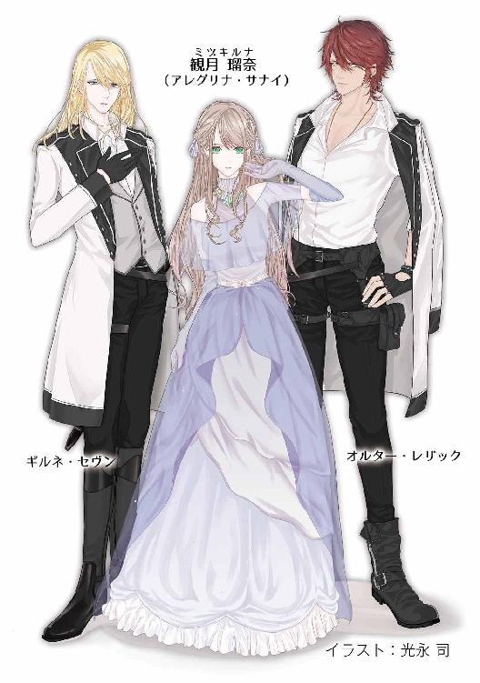

| 月華伝 1巻 月KA伝シリーズ | |
| 御木 宏美 | |
| クリーク・アンド・リバー社 (2018) | |

月華伝 １巻
～月KA伝シリーズ１～
御木 宏美
本作品の全部または一部を無断で複製、転載、配信、送信したり、ホームページ上に転載したりすることを禁止します。また、本作品の内容を無断で改変、改ざん等を行うことも禁止します。
本作品購入時にご承諾いただいた規約により、有償・無償にかかわらず本作品を第三者に譲渡することはできません。
本作品を示すサムネイルなどのイメージ画像は、再ダウンロード時に予告なく変更される場合があります。
本作品は縦書きでレイアウトされています。
また、ご覧になるリーディングシステムにより、表示の差が認められることがあります。
月華伝
プロローグ
「この惑星に生きるすべての人類へ。私は今日ここに宣言する。我々は月へ行くことを選びます！ 五年以内に無人探査船を月へ、そして十年以内に人類が月面に立つ計画を選びます！」
「よしっ！」
テレビ演説に見入っていたアースは力強くガッツポーズをとった。
「あの月になにがあるか──答えは皆さんもおわかりです」
大きな満月を背景に、宇宙開発事情に関する歴史的な決断をくだした大統領はカメラに向かい、熱い眼差しで語りかける。
「我々が何者で、なぜこの惑星の上にいるか。科学的に解明されたのは百八十年前のことです」
そのとき電話が鳴った。
アースは舌を鳴らした。よりによって、この時間に。普段なら無視するところだが、今日は大事な連絡がある。夕食の買い物に行った母親からも、電話がかかってきたら必ず出るようにと釘をさされている。
大統領の演説に心を残しながらも、アースは座っていた居間のソファから腰を上げ、壁にかかっている電話の受話器を取り上げた。
「はい、エ──」
「アース！」
家名を名乗る途中で、双子の妹のディアナが声を弾ませた。
待っていた連絡だ。
「どうだった？」
「やったわ！」ディアナは喜びを爆発させるように叫んだ。「選ばれた！ 選ばれたわ！ アレグリナ・サナイよ！」
アースは天井に向かって大きく息を吐き出した。
「アース？」
ディアナがいぶかしげに問う。
「ごめん」アースは苦笑気味に答えた。「よかった。安心したよ」
そして改めて受話器に向かい心から祝福の言葉をかける。
「おめでとう、ディー」
「ありがとう」
ディアナの声も歓喜に潤んでいる。
ディアナは女優だ。七歳でデビューし、これまで数々の映画やテレビドラマに出演してきたが、ついに今日、大作映画の主役を射止めた。
「アレグリナ・サナイ、か」その役をなによりも演りたがっていたことを知っている。「スターシップ・アースソルを、人類が忘れていた恒星間移住の歴史を解き明かした女王」
「もう、アースったら、そっち？」
ディアナは不満げな声をあげる。
「わかってるよ」アースは苦笑をこぼした。「彼女は四十歳を過ぎても二十代後半にしか見えなかった、だろ？」
「そうよ。愛と美の女神。月族の麗しき薔薇」ディアナは幼いころより何百回と口にしてきた言葉をまた情感たっぷりに繰り返す。「アレグリナの人生はこれまで何回も芝居や映画になってきたけど、彼女を演じたのは絶世の美女と謳われた女優ばかり。つまりアレグリナを演るってことは、今一番の美少女ってことなのよ」
「ああ、そうだね」
首を縦に振りながらアースは背後のテレビに目を向けた。
大統領の発表はまだ続いている。
「父祖が母なる惑星を発って二千二百年。我々はようやくその偉大な航跡の足元にたどり着きました。ここからです。我々が失った記憶、神秘のヴェールに包まれた記憶を解き明かす時が来たのです」
「アース？」
「ああ、ごめん」アースは慌てて顔を戻した。「大丈夫、聞いてる」
だが、耳はまだ背後の演説を拾っている。すると、まるでその様子が見えているかのようにディアナが静かに笑った。
「テレビ、見てるわ。大統領が演説してる。いよいよ月探査が始まるのね」
「ああ」
受話器を握りしめアースは力強く頷いた。
ディアナが主役に選ばれたことと月探査、二重の喜びだ。
胸を塞ぐ歓喜に何度も小さく首を振るアースに、やはり見えてはいないのに気持ちが伝わったのか、ディアナは微笑みをたたえた声でしっとりと言った。
「次はアースの番ね」
アースは苦笑を浮かべた。
「僕の夢はまだはるか先だよ」
「どうして？ ずっと月に行きたがっていたじゃない。絶対宇宙飛行士になって、アースソルを探査するんだって」
「僕はまだ十七だよ。宇宙飛行士になるには、大学へ行って、空軍に入って、戦闘機のパイロットにならなきゃ。最低でもまだ十年はかかる。それに宇宙飛行士の選抜試験を受けられるのは優秀なパイロットと認められた者だけだ」
「なれるわ」ディアナはきっぱりと言った。「アースならできる」
「ディアナ」
戸惑うアースにディアナは言い含めるように一言一言ゆっくりと語る。
「自分を救えるのは、自分の気持ちしかない──あなたならできる、アース。あなたは宇宙飛行士になって、月へ行くの」
その言葉は心に沁み入り、力となってアースの全身へ広がって行った。
「ああ」
アースは力強く頷いた。
ディアナが微笑った。
「これから社長がお祝いのパーティーを開いてくれるって。今夜は遅くなりそうだって、ママに伝えて」
「わかった。母さん、ディーなら必ず選ばれるから今夜はごちそうだって張り切って買い物に行ったけど。伝えとくよ。こっちは任せろ」答えて、アースは改めて祝いの言葉を述べた。「おめでとう、ディー」
「ありがとう──じゃあね」
「ああ」
電話が切れた。
受話器を戻しながらアースは背後を振り返った。
大統領の演説はまだ続いていた。
「この挑戦には多くの危険と困難がともなうことでしょう。また大きな経済的負担ものしかかります。しかし人類は常に未知の領域に挑み、前進し続けてきました。蒸気機関、自動車、航空機。我々は失われた科学文明を一つ一つ取り戻してきました。そのきっかけを作ったレイクトラ第十七代神王アレグリナ・サナイはかつてこう言ったそうです。諦めたらそこで終わる。投げ出してはいけない。自分を信じろ。自分を救えるのは、自分の気持ちしかない。その言葉どおり、我々は幾多の困難があっても挑み続けます。これは始まりです。父祖が成し遂げた偉大な航海に我々が再び漕ぎ出すための始まりなのです」
「アースソルか」
自身の名の由来となったその名前を声にしながら、アースは身体の奥から力と闘志が沸々と湧いてくるのを感じた。
一章
１
「まこと、このような場所にアレグリナ様はおられるのか」
ギルネは額に浮かんだ汗を指先でぬぐった。
暦は秋というが、うだるほどの暑さである。
広い通りはびっしりと立ち並んだ箱のような建物にさえぎられて、そよとも風が吹かない。時刻は正午。過酷な環境には慣れている武人のディディムも、この暑さにはさすがに渋面を見せている。
ギルネを不快にさせているのは気温だけではない。建物は高さ、幅、色目、材質、様式の統一がなされておらず、見るにたえない醜悪だ。さらにあちらこちらの店から耳障りな音楽が大音量で鳴り響く。
人の多さもうんざりするものだった。通りの両端を走る歩道には人が溢れている。端に立っているギルネはわずかの間に見知らぬ者と二回も肩がぶつかった。
さらに一段下がった車道は自動車というもので埋めつくされている。ほとんど進んでいないその列は胸が悪くなる空気を遠慮なく吐き出す。
蕪雑の極地だと眉をひそめるギルネに、すでにこの世界での生活のほうが生誕の地より長くなったオルターが笑った
「ここキョートは百五十年前まで千年にわたってこの国の都だった街だとさ」
「都？ これがか」
ギルネは冷ややかに言い捨てる。
行き交う女の装いも気持ちのいいものでない。若い女の半分は腕をすべてさらけ出し、さらに年若い十六、七の少女たちは太ももまでむき出しで歩いている。彼らが捜しているアレグリナと齢のころは同じだ。
オルターがにやりと口角を上げた。
「ご高尚な十一使徒家の騎士殿には刺激が強すぎるか」
ギルネは横目に冷たい一瞥をくれる。オルターは声をあげて笑った。
「おまえらもガキのころ二年間こっちで暮らしてただろうが。ま、ワイオミングのド田舎じゃ目にする女は牝牛と牝馬だけだが」
言いざま、彼は前を通った黒髪の若い女に口笛を鳴らした。深く切り込んだ服の胸元からふくよかな乳房が半分のぞいている。
オルターの下衆な行為と女の破廉恥な装いにギルネの眉間のしわが深まる。
女は歩みを止めないまま少し不思議そうにオルターを見つめた。彼女にはオルターの言葉がどこの国のものかわからなかった。オルターは薄く笑む。
意識を集中していたシナーンが顔を上げた。
「どうしました？」
問いとともにギルネに向けられた瞳は萌える若葉のような瑞々しい明翠色。しかしその双眸には光は映っていない。
反対側からディディムが細い肩に手をかけた。
「さまつなことだ。それよりアレグリナ様は」
盲目の少年は頷いた。
「......感じます。たしかにこの近くにおいでです」ひと呼吸おいて女のように細い指が上がる。「あちらに......」
ギルネたちは指が示す方向に目をやった。
通りの反対側。そちらにも建物が隙間なく並んでいる。かつてこの国の都だったというだけあって大きな街だ。奥へ幾重にも重なった建物の数は数千に上るだろう。
まるで視えているかのように街並を直視したままシナーンは呟く。
「強い光です。これまでで一番強い......」
三人は目を細めた。初秋の強い太陽は彼らがいる歩道の真上にあった。日射しを受けて、金属でできた歩道の屋根や建物の外壁がきらきらと輝いている。
ギルネが唇を引き結んだ。
「アレグリナ様......」
横断歩道の信号が青になり、通行人の一群が車道を渡り始めた。
オルターがギルネとディディムに視線を向けてごく軽い調子で言った。
「で、どうする？ 行くのか？」
「当然だ」
ギルネが硬い声で答える。オルターはやれやれと肩をすくめた。
視えないシナーンだけはまだ街並を見つめていた。ディディムがその肩にそっと手をかける。
夢から醒めたようにシナーンは振り返った。ディディムは頷き、静かに導く。
シナーンを介助しながら四人は横断歩道を渡っていった。
２
エレベーターの前で瑠奈は杉原を待っていた。
男が客室の中から杉原に代金を支払っている。先ほどまで瑠奈に、自分で用意してきた美少女キャラの衣装を着せてエロティックなポーズを決めさせ、何百枚も写真を撮っていた客だ。三十代前半の眼鏡をかけた細身の男で、訊いてもいないのに国立大学の理工系学部を卒業し一流企業に勤めるエンジニアと名乗った。自慢げに。
客の素性などどうでもいい。身の安全と支払いさえ保障されれば。
杉原は、そこは毎回きちんと押さえてくれていて、瑠奈が嫌悪を覚える醜い男や危険な男はあてがってこない。
「本当に綺麗なコですねえ。よかったですよ。次回もぜひあのコで」
興奮気味の客に杉原は営業用の笑みを浮かべている。
「またよろしくお願いします」
客室のドアが閉まるのを目にして瑠奈はエレベーターの下行きのボタンを押した。
杉原がやって来た。
「一発でおまえの虜になったらしいな」
サングラスの向こうで切れ長の双眸が可笑しげに笑っている。瑠奈は答えず、エレベーターの位置表示灯を見た。一機は一階に停まったまま、もう一機は二階下でまだ停止している。
「ほら」
声に視線を戻すと、二つに折った万札が差し出されていた。
受け取って広げ、枚数を数えた──五枚。
瑠奈はブランド物のスーツを厭味なく着こなしている男を見上げた。
「......なんで？」
八千円多い。
杉原は酷薄そうな薄い唇の端を少し緩めた。
「細かいのがないんや。ええから取っとけ」
チンと音がしてエレベーターの扉が開いた。杉原は瑠奈をおいて乗り込む。瑠奈はその背を見つめた。
世界的な観光地として景観や営業に関する規制が厳しいここ京都にも風俗産業がある。杉原はその京都でデートクラブを経営している。年齢は三十代後半。服装はいつも黒のスーツに白いシャツで、ネクタイは締めず、手首には数百万円の腕時計をはめ、一見は実業家風。しかし軽く伸ばして茶色にカラーリングした髪と色つきのサングラスを見て、堅気だと思う者はいない。
彼が抱えるデート嬢は四十人。京都一の規模と売上を誇る。料金はレギュラーで一時間一万円。別に二時間七万円のＶＩＰコースがある。店のホームページでは、ＶＩＰコースはタレントやモデル、レースクィーンを派遣と謳っている。
瑠奈はそのＶＩＰコースの専属だ。といっても芸能人ではない。年齢が違法だったのだ。十七歳になったばかり。現役の高校生である。
少女は手の中の五万円に視線を落とした。
客が支払う料金のうち、女の子の取り分は六割。業界用語でツースリーという標準だ。
チップを出すからアブノーマルなセックスをさせてくれと要求する客はいても、ギャラを余分に払ってくれる事務所はない。いくら若くても金に汚い世界だということぐらい瑠奈も知っている。
「おい？」
杉原が開のボタンを押して待っている。
瑠奈はバッグの中のスワロフスキービーズを編んだ小さな巾着に金をしまい、箱に乗り込んだ。
エレベーターが一階に着いた。土曜の昼の十二時とあって、ビジネスホテルの狭いロビーに客の姿はなかった。
無人のフロントの前を通り、二人はホテルの外に出た。
とたんに湿気を含んだ熱気に包まれる。盆地の京都は九月下旬でもまだうだるほど暑い。
「ええかげんに涼しなって欲しいな」
ぼやきながら杉原は歩道を横ぎる。路肩に一千万円以上する左ハンドルのジャガーがハザードを点滅させて路駐っている。
「杉原さん」
車の前を通って車道に出て行く杉原に瑠奈は声をかけた。
「一時から面接なんや。メシ食ってる時間はないけど、園まで送ってったるわ」
瑠奈は首を横に振った。
「買い物したいから。河原町まで歩く」
助手席のドアを開けたまま杉原が顔を上げた。
ホテルは御池通と四条通の中間にあった。地元民が河原町と呼ぶ京都一の繁華街、阪急四条河原町駅周辺までは歩いて五分ほど。
「わかった」ドアを閉めて、杉原は再び車の前を横ぎり、歩道に戻って来た。「なら気をつけて帰れよ。ああ、それから明日は二時や。来れるんやったら十一時半ごろ事務所に来い。メシ食いに行こや」
「うん」一拍置いて瑠奈は続けた。「いつもありがと」
酷薄そうな杉原の口元が少し緩む。
「どういたしまして。じゃあな」
「お疲れさま」
重い音を立てて運転席のドアが閉まった。
ガラス越しに杉原が左手を上げる。瑠奈は黙って頷いた。
高級車は御池通のほうへ滑らかに走り去った。
遠ざかる車体を見送る瑠奈を、通行人が興味深そうに見ていた。ここ河原町通は人も車も多い。
視線の意味を瑠奈はわかっていた。ひと目で水商売筋だとわかる男が女の子とビジネスホテルから出て来て、男だけが高級外車に乗り、去った。なにがあったか明白だ。奥様風の年配の女性は瑠奈の若さに眉をひそめている。日本人の若い男は瑠奈の顔をじっと見つめ、中南米系の外国人はにやにやと笑う。
男たちは無視し、瑠奈は背筋をしゃんと伸ばして老女をまっすぐに見返した。後ろめたい気持ちや卑屈になる理由なんかない。
案の定、蔑視していたほうが戸惑う。
瑠奈は踵を返し、南に向かって歩き出した。
この仕事を始めたのは一年前。金を貯めるためだ。
自分のしていることが犯罪にあたるとわかっている。
けれど──。
瑠奈は一歳ごろに大沢池のほとりで一人泣いていたところを保護され、児童福祉施設で育った。今もそこで暮らしている。保護された時、身元を示す物はなに一つ身に着けておらず、肉親の存在はまったくわからない。
施設での生活が長い分、大勢の年長者を見てきたので瑠奈は知っていた。自分のようにまったく身寄りがない未成年者が十八歳になり施設を出なければならなくなった時、どういう将来が待っているか。
大学や専門学校に進学できる者は極めて少数。たいていは施設の職員の紹介で従業員寮がある職場に就職する。仕事は肉体労働や単純作業の繰り返しで、給料は安い。
それはつまり社会の負け組になるということだ。
そうなりたくない。お金が欲しい。金があればほかの選択肢を手にできる。
その一念で風俗業界に飛び込んだ。
後ろめたさはなかった。未成年者が短時間で大金を稼ぐ方法などそれしかないのだから。
手にしたギャラは施設の職員に内緒で作った銀行の口座に預けてある。預金は一年で四百万円になった。
河原町から郊外の施設までバスで三十分あまり。門限は六時なので五時間ほど時間がある。
瑠奈は四条通に着く手前で西に折れた。
観光客や修学旅行生が溢れる新京極・寺町通を横ぎり、御幸町通へ。そこから烏丸までは地元民が集まるエリアで、お洒落なショップやカフェが点在している。
「おっ、スゲエ可愛い」
「お嬢さん、僕たちとお茶でも飲みませんかァ、なんて」
前から来た外国人の二人連れがすれ違いざまに英語以外の言葉で声をかけてきた。
瑠奈は無視した。男に声をかけられることはしょっちゅう。ただ歩いているだけで誰もが視線を止める。
光を浴びると艶やかな光沢を放つ亜麻色の髪は生まれながらで、髪と同じ色の長い睫毛に縁取られた瞳は若葉のような明るい緑。鼻と顎が細く、目はぱっちりと大きく、百六十三センチとすらりと伸びた背に身体つきは華奢で、顔は極めて小さい。灼けないように気を配っている肌は白磁の色で、肌理の細かさと張りは赤ん坊のよう。その容貌は杉原が抱える四十人の女の子の中でも群を抜いて一番。タレントもレースクィーンもかなわない。妖精か、稀代の彫刻家が命をかけて作りあげた動く人形のようだと評した男もいる。
腰まで届く長い髪とフレアスカートの裾を風になびかせエレガントに歩く瑠奈に、すれ違う男たちは老いも若きも視線を釘づける。
無視された二人組は肩をすくめて歩き去った。もっとも彼らも本気ではなかったのだろう。本当に誘う気なら日本語か英語で声をかけてくるはずである。
普通の女子高生なら二人組がなにを言ったかわからない。しかし瑠奈にはわかった。耳から入った言葉は瑠奈の知らない外国語だったが、同時に頭の中にもう一つの音が聞こえる。それは日本語で、まるで同時通訳を聞いているようだ。
物心ついた時はすでにその状態だったので、子供のころの瑠奈は、誰もがそういうものだと思っていた。違うと気づいたのは小学校の三年生か四年生の時だ。
耳から入った言語はなに語でも日本語で理解できた。まったく知らないはずの中国語でも、韓国語でも、ロシア語でも。ただしわかるのはそばにいる人間が発した声を耳がじかに拾った時だけだ。同じ中国語でもラジオやテレビの番組、映画などは、なにを言っているのかわからない。
英語のリスニングの小テストには有利だが、そんな特殊な能力があると周囲にわかったら奇異の目で見られかねない。普通と呼ばれている範囲からはみ出た者に対して世間がどう反応をするか、施設で育った瑠奈はいやというほど味わっている。ゆえにこのことは誰にも打ち明けていない。施設の職員にも。
杉原には買い物がしたいと言ったが、明確な品物や目的の店があるわけではなく通りを歩いていた瑠奈はあるファッションビルの前で足を止めた。
ガラスの向こうに女の子に人気のブランドの高価な新作バッグが並んでいる。
施設の職員に見つかるとやっかいなことになるので今は買えない。
見るだけのつもりで瑠奈は店の中へ脚を向けた。その時、後ろから肩を叩かれた。
３
びっくりして瑠奈は振り返った。
「よお、久しぶり」
かつて施設にいた篤広が立っていた。
会うのは二年ぶり。髪を金髪に近い色に染め、黒いスーツを着ている。齢は瑠奈より二つ上。
顔をしかめる瑠奈を見て、歓迎されていないと察した篤広は薄く笑った。
「相変わらずやなァ。そんな顔するなや。扱いにくいオンナやって、オトコに嫌われんで」
「......なにか用？」
訊ねる瑠奈の声は冷たい。
「別に用はないけど。久しぶりやん？ まだあそこにおるんか？」
馴れ馴れしく肩に腕を回してくる。
節くれだってかさついた指にブルガリ風の指輪が光っていた。黒いジャケットの袖口は白くてかっている。
瑠奈は身をよじって腕から抜け出た。そして静かに睨み返す。
篤広は残された手を腰にあて苦笑を浮かべた。
「そんなつれなくすんなや」次の瞬間、苦笑は下卑た狡猾なものに変わる。「初めてのオトコやろ、俺」
「............」
瑠奈はまだ十二歳、中学一年の夏だった。
そのころから瑠奈の美貌は抜きん出ていた。一方、篤広は何回も万引きや暴力事件を起こして肉親にも見放されたワルだった。
施設では男女が一つ屋根の下で暮らしていて、もちろん部屋は別々だったが、職員の目を盗んでいたずらをする場所などいくらでもあった。二年前、三流の高校を中退して施設を飛び出すまで、篤広はたびたびそんな場所に力ずくで瑠奈を連れ込み、十代の旺盛な性欲を押しつけてきた。
目つきはあのころと同じ。顔つきも雰囲気も変わってない。
瑠奈は冷めた頭と目で見返した。
格好から察するに、おそらくホスト。
高校を中退し、児童養護施設を飛び出した挙句にホスト。世の中に反抗する篤広の気持ちもわからなくもないが、頭が悪すぎる。それに真っ昼間から店に出る恰好で河原町界隈にいるホストなど、どんな状態か聞かずとも明白だ。
瑠奈は鼻で笑った。
「ビンボー人と寝る趣味はない。さっさと行って」
吊り上がり気味の篤広の双眸がきつさを増した。瑠奈はまっすぐに見返す。
突然、篤広が笑った。
「その服どうしたんや。そんなん施設では買うてもらえへんやろ」
「............」
「そういうカッコすると、いいトコのお嬢に見えるな」
たしかに今着ているワンピースは稼いだ金で買ったものだった。仕事に出る前に杉原の事務所で着替えた。施設を出る時に着ていた服はバッグの中に入っている。
「おまえ、デート嬢やってんのやろ」
「............」
篤広は勝ち誇ったように目を眇める。
「店のホームページ見たで。びっくりしたわ。園のオッサンやオバハンら知っとんのか？」
「............」
「知るわけないわな。大丈夫、黙っといてやるで」
瑠奈は相手の目を凝視し顎を引いた。
「言えば？」
「なん......？」
ばれても貯金を没収されるわけではなし。もとより暮らしているのは児童養護施設。痛手といえば高校を退学処分になるくらいだ。それでも大検に合格すれば高校卒業の資格は取れる。
ゆるぎない眼差しに篤広のほうが戸惑っている。
「......なに考えてんねん、おまえ。おまえ、まだ十八になっとらんやろ。バレたらオーナーも捕まんねんぞ」
杉原の名前に瑠奈は一瞬揺れた。
杉原は瑠奈を特別扱いしてくれる。デートクラブの客がつく時間は平日の夜が圧倒的に多い。客に会社員が多いからだ。しかし瑠奈の暮らす施設では六時以降の外出は認められていない。しかも学生なので学期の間は、出勤できるのは土・日だけ。一日に客は一人。この条件で勤務が認められているデート嬢は瑠奈だけだ。
さらに瑠奈がスマートフォンを持っていないと言うと、杉原は買い与えてくれた。毎月の使用料も払ってくれている。
食事にも頻繁に連れて行ってくれる。それも両親が揃った家庭の女の子でも行けないような高級店ばかりだ。
ほかにも事務所には客の指定した場所へ女の子を送迎する役目の男が数人いて、ほかのデート嬢たちは彼らが送って行くが、瑠奈だけは毎回杉原自らが行っている。
瑠奈だけがあらゆる面で優遇されている。
瑠奈の迷いを察して篤広はたたみかけてくる。
「おまえ、知ってるかどうか知らんけど、おまえンとこの杉原社長いうたら、祇園の倒産したお茶屋の息子で、無一文から京都一のデートクラブのオーナーになったって、ギョーカイの有名人やで。杉原さんに憧れてる水商売系、多いんやわ。その憧れの人、ムショ送りにしてみいな。おまえ、マジで事務所のヤツらに殺されっぞ」
瑠奈は軽く下唇を噛んだ。篤広は唇の端を上げる。
「みてみい。黙ってるにこしたことないやろが。チクらへんから、なあ？」
馴れ馴れしく瑠奈の肩を引き寄せる。頬と頬が触れ合うほど接近した。篤広は声を潜める。
「もっかい、俺のオンナになれよ」
瑠奈はその頬に平手をみまった。
「なにすんねん！」
「施設を飛び出した挙句、今はホスト？ どうせ売れてないからキャッチやらされてるんでしょう。貢がせようって魂胆見え見えよ」
「も一回言ってみろ！」
さっと右手が上がる。
「──！」
殴られると瑠奈は身をすくめた。
だが、手は上がっただけでその場にとどまっている。
瑠奈は怒りのこもった双眸を睨み返した。
「言いたければ言えばいい。けどあんたの女になんか絶対ならない！ さっさと消えて！ そのバカ面、ムカつくの！」
「この女ぁっ！」
篤広の腕が上に伸びた。
その時、別の手が背後から彼の手首をつかんだ。次の瞬間、篤広の身体は横に吹っ飛んだ。
「キャッ！」
瑠奈は思わず悲鳴をあげて目を閉じた。
「やめなさい、オルター！」
凛とした男の声が聞こえた。
瑠奈は恐る恐る目を開けた。
篤広がいた場所に陽に灼けた白人の男が拳を握り締めて立っていた。白いＴシャツに燃えるような赤毛がざんばらと散っている。まるで施設の中庭に咲いている彼岸花のようだ。
突然のことで、瑠奈は篤弘のことを忘れて男を見つめた。その後ろからアスファルトを蹴る革靴の音が聞こえ、新たに三人の外国人の男がやって来た。
「この野郎っ、なんすんねんっ！」
篤広の声に瑠奈は我に返り、そちらに目を向けた。
殴られた頬を押さえた篤広は怒りで形相が変わっている。
赤毛の男が鼻で笑った。
「うちのお姫様にちょっかい出さないでもらえる？」
瑠奈の知らない外国語だった。続いて男は英語で言った。
「Go away!」
篤広は赤毛とあとからやって来た三人を見渡した。
表情が苦々しく歪んだ。さしものワルも四対一では勝ち目がない。それでも意地か、殴った赤毛の男だけはぎりっと睨み返す。そして走り去った。
瑠奈は肩の力を抜いた。
「Are you all right?」
赤毛の男が訊いてきた。
振り返り、瑠奈は頷いた。
「......Thank you」
男は口元を緩めた。
「You're welcome」
改めて瑠奈はその顔を見た。
十センチ近いヒールのミュールを履いている百六十三センチの瑠奈がまだ見上げる長身だ。夕陽のような赤毛だが、対照的に瞳は涼しげな灰色で、ワイルドな印象のイケメンだった。陽に灼けた肌に白いＴシャツが映える。年齢は二十代半ばから後半。手首にターコイズがたくさんついたシルバーの太いバングルをはめ、指にもターコイズとシルバーの太いリングをつけている。
「暴力は慎め。問題が起こったらなんとする」
背後からの厳しい口調のいさめに男は口元を緩めた。笑うと目尻にしわが二本刻まれて、野性っぽい顔が少年のようになる。
あとから来た男の一人が瑠奈の前へ歩み出て来た。
「おけがはございませんか？」
先の声と同一人物だった。ただし今度の口調は丁寧で敬うような響きがある。
声の主はモデルか俳優級の美形だった。整いすぎていて逆に冷たさを覚える。齢は赤毛と同じくらいだが、服装は対照的。こちらは仕立てのよさそうな白いスーツを着ている。光沢がある開襟のシャツはブルー。背は赤毛より少し低いが、ヒールを履いた瑠奈よりも上。胸の辺りまで伸ばした髪は輝くような金髪で、瞳はシャツの色と同じ、深い湖水を思わせるクールなブルー。
「大...丈夫です。ありがとうございました」
彼らの言葉が何語かわからなかったので瑠奈は日本語で礼を言った。とたんに赤毛と金髪が揃って眉を少し上げた。
「ギルネ、大丈夫ですか？」
優しい声がした。金髪が振り返る。
言ったのは瑠奈と同年齢の少年だった。かたわらに彼を保護するように、黒いスーツに濃いモスグリーンのネクタイを締めた長身の男が立っている。
少年のほうは身長も瑠奈と変わらない。身体もまだ細く、顔立ちも含めて容姿は極めて女性的。波を打って肩から下がる髪は柔らかな光を放つ金髪だった。肌は瑠奈ほどに白く、肌理細かく、少女と見まがう美少年である。
目が合って少年は微笑んだ。
「アレグリナ様」
「え？」
白いスーツの金髪が中世の騎士がするように手のひらを上に向けて腰の前で手を当て、瑠奈に向かって軽く一礼した。
「大事にいたらずなによりでした、神王聖下。お迎えに参りました」
瑠奈は呆気にとられて伏せられた男の頭を見つめた。一点の曇りもない金髪が肩からこぼれ落ち男の顔を覆っている。
男は腕と姿勢を戻し、周囲に軽く視線を走らせた。
綺麗なものに敏感な女性たちがこちらへ興味深げな眼差しを寄せている。
「人目がありますゆえ、どうか立ったまま話をさせていただく無礼をご容赦ください。貴女様は第十七代神王アレグリナ様でございますね？ 我らは十一使徒家の者です。私はセヴン家のギルネ。そして──」すらりとした指が赤毛の男を示す。「オルター・レザック。レザック家の者です」
「...神...王......？」
聞いたことのない言葉に戸惑う瑠奈に赤毛の男が口を開いた。
「Can you understand his speaking?」
迷いながらも瑠奈は首を縦に振った。どこの国の言葉かはわからないが、ギルネ・セヴンの言っている内容は、わかる。
オルターは口の端を上げた。今度は英語ではない言葉を使う。
「だったら間違いない。あんたはアレグリナだ。この言語はこちらの世界のものじゃない」
「こちらの世界じゃないって......」
「まったく別の世界。異次元とか別の惑星ってことさ。それがどこか俺たちも知らないが」
瑠奈は目を見開いた。
ギルネと名乗った男が冷ややかに赤毛を睨んだ。
「言葉遣いに気をつけよ、オルター。神王聖下に対し無礼がすぎる」
オルターは肩をすくめた。
「待って。その神王って......」
ギルネが答える。
「月神シャーがお姿を変えてこの世にご降臨あそばした救世主、偉大なるアイヴァン・サナイ様のご子孫にして我らが王であらせられます」
至極当然といった口調は整いすぎた容貌も合わさって、ひどく冷たく聞こえた。
答えの内容もさることながら、その時になって瑠奈は彼らと会話が成立していることに気づき、驚く。
「日本語...わかるの......？」
「いえ、この国の言葉はまったく存じません。ですがアレグリナ様の発せられるお言葉は理解できます。それこそ貴女様がアレグリナ様であられる証。神王は代々シャーバンであらせられます」
「......シャーバン......」
「聖別されし者です」
オルターが続けた。
「超能力みたいなもんだ。この場合はテレパシーってヤツかな。耳に入って来てるのはなにを言ってるかわからない日本語の音だが、俺たちがわかる言葉に訳されたもう一つの声が頭の中に直接聞こえてるんだ」
瑠奈は驚いた。自分とまったく同じである。
「それは私の言葉だけ......？」
「ああ、あんた...っと、アレグリナ様の声だけだ。ほかの日本人のはまるきりわからねえ」
ギルネが頷く。
「ちなみに」オルターは片目を瞑った。「俺の場合はあっちの世界の言葉じゃなく英語で聞こえてンだけどな。向こうよりアメリカでの生活のほうが長いから。てなわけで、言葉遣いが無礼なのは大目にみてくれ。なにしろ向こうにいたのはガキのころだけだから、お上品な言葉なんて身につける間がなくって」
「レイクトラで育っていてもおまえは変わらないだろう」
黒いスーツの男が後ろから揶揄する。魅惑的な低音だった。背はオルターよりさらに高く、精悍な顔立ち。正統派の偉丈夫だ。髪と瞳は黒に近い褐色で、肌はオルターと同じくらいよく陽に灼けている。齢はやはり二十代後半か。
オルターは朗らかに笑った。偉丈夫の隣にいる金髪の美少年も口元を緩める。
ギルネがため息混じりに首を横に振り、偉丈夫と美少年を示した。
「ディディム・カラマンにシナーン・エフェスです」
改めてシナーンという美少年が微笑む。近くで見ると本当に綺麗な顔をしていた。ギルネも美形だが、彼の容貌はあくまで男性として整っている。対してシナーンは眉も頬も顎のラインも優しく丸みを帯びていて、女性的な香りが漂う。瞳は瑠奈と同じ明るいグリーン。
「シナーンもシャーバンです。その力はおそらく今、国で一番でしょう。こうしてアレグリナ様をお捜しすることができましたのも、彼がいたからこそ」
「僕より力のある人はいくらでもいます、ギルネ」シナーンが物静かに答えた。「見つけられたのはアレグリナ様だからです」
「私......？」
「とても強い光......」
少年は瑠奈の顔のほうに向かって頬を包みこむように両手を差し伸べた。
瑠奈は思わず一歩後ろに退がった。触れられなかったシナーンは腕を上げたまま、瑠奈の顔を探すように指先を動かす。
その指の動きで瑠奈は気づいた。
もしかしてと並びのディディムに目を向けると、偉丈夫な男とオルターは視線を落とす。
三人の反応は視えていないはずのシナーンが微笑んだ。
「アレグリナ様のお光は視えます」
瑠奈は明翠色の瞳を見つめた。
光を映さないのに、その瞳は一点の曇りもなく澄みきっている。
見守っていたギルネが軽く咳払いした。
「とにかくご無事でなによりでした。ご帰国の手はずが整っております」
瑠奈は眉をひそめた。
「......帰国......？」
「はい」
「......帰る...って......、どこへ......？」
シナーンも含めて四人は顔を見合わせた。それから八つの視線が瑠奈を見る。
少々険しい顔つきでギルネが口を開いた。
「レイクトラ──アレグリナ様がお生まれになった国のことを憶えていらっしゃいますか？」
瑠奈は首を横に振った。ギルネは眉をひそめる。
「ニーデ・クルやセフィラやシェマ・レザックはご一緒では......」
「誰？」
男たちは再び顔を見合わせる。
知りうる限りで、大沢池のほとりで発見された時、瑠奈は一人だった。レイクトラという国の名前も、ギルネが言った名前も初めて聞く。
オルターがため息を落としながら頭をかいた。
「だから捜し出せても憶えてねえぜって言ったじゃねえか。一歳になる前の記憶が残ってる人間がいるかってンだ」
ギルネとディディムは難しい顔をしている。
ギルネが低い声で言い放った。
「それでもお越しいただかねば。もう時間がない」
ディディムが首を縦に振る。
「待って。行くってレイクトラという所へ？」
「さようでございます。二つの世界が結ばれる満月まであと二日。これからすぐにワイオミングへ向かいます」
「ワイオミングってアメリカの!?」
「山の民の住まう地に聖地はございますゆえ」
ギルネの声は冷たい。瑠奈は焦った。
「待って、待ってよ」
「アレグリナ様」
穏やかで静かな声がした。
声のほうに顔を向けると、シナーンが手のひらを上に向けて片手を差し出した。
「お手を......」
「え......？」
明翠色の瞳が見つめている。
「............」
瑠奈は戸惑いながら女性のように細く滑らかな手に手を乗せた。
「お目を閉じて......」
言われたままに瞼を閉じる。次の瞬間、頭の中に中世ヨーロッパの城か教会の内部のような石造りの広い空間が浮かんだ。
驚いて思わず瑠奈は手を離した。途端に映像が消える。
「...なに、今の......」
前頭部に残像のようなもやもやしたものが焼きついている。
空間の床は高校の教室四つ分ほどの広さで、円に近い多角形だった。周囲の石の壁に沿って石柱が空間を囲んでいる。すべての柱の中ほどに燭台があり、青や緑色の炎が揺れていた。窓がないのか、あるいは夜なのか、内部は薄暗く、すべてのものがその不思議な色の炎を受けて青緑色に光っている。
天井高は体育館ほどあり、船底のようなカーブの垂れ壁が四方八方から中心に向かって上り傾斜を描く。花が咲いているようにも、何枚もの布が重なって風に踊っているようにも、あるいは下からの光を受けてエメラルドグリーンの水が波打っているようにも見える。その中心の真下に男性の石像があった。見上げるほど高い台座の上に立っている。
「月の谷の聖殿です。祭壇の上におわしますのが、シャーがお姿を変えてご降臨あそばした偉大なるアイヴァン・サナイ様。アレグリナ様のご先祖様です」
瑠奈は呆然と答えるシナーンの明翠色の双眸を見つめた。
オルターは超能力みたいなものと言った。
石像の男は膝の上まであるチュニック風の上着を着て右手に剣を携えていた。台座の左右に灯された青緑色の篝火が下から像の顔を照らしている。年齢は四十代前半だろうか。端整な美丈夫だが厳しい表情をしていて、瑠奈と似てはない。
目を閉じ、瑠奈はゆっくりと頭を左右に振った。
この世に生まれている以上、自分にもどこかに肉親がいるはずだ。けれど、そんなものは自分にはないと、幼いころから瑠奈は血や家族というものにきっぱりと決別して生きてきた。
「アレグリナ様？」
いかがなさいましたとギルネが訊ねる。
瑠奈は冷たい湖底のような碧眼をまっすぐに見返した。
「瑠奈よ」
「は？」
「私の名は観月瑠奈。親がつけた名前じゃないけれど......」
名づけ親は保護された場所の寺の住職と最初に入った乳児院の院長。その日は旧暦の八月十五日で大沢池では観月の夕べが催されていた。かつてないほど月が美しい夜だったと聞いている。
平安時代から続く月見の宴を見ようと、外国人を含めて大勢の見物客が池を囲んでいた。瑠奈はその池のほとりで一人泣いていたところを保護された。
亜麻色の髪に緑黄色の瞳、雪のように白い肌をしたよちよち歩きの赤ん坊。警察は当初、迷子だと考えた。しかしいくら待っても子供がいなくなったと届け出る親は現れなかった。次に誘拐・遺棄の線で日本全国の警察署に問い合わせたが、該当する事件はない。数日後、ついに警察は捨て子と判断した。
ただしそれには疑問が一つ残った。赤ん坊が身につけていたのは洗礼や宮参りの時に着せるような白いドレスで、それは特別に仕立てられたらしく手縫いで、さらにおむつにいたるまで絹だった。絹のドレスをあつらえる経済力のある親が子供を捨てるだろうか。とはいえ、捜索願を出す親が現れない以上、捨てられた可能性が濃厚である。
結局、ドレスのことは捨て置かれ、なんらかの事情で子供を育てられなくなった親が遺棄したのだろうと結論づけられた。東京や大阪などでは、風俗業界で働いている外国人の女性が日本人との間に生まれた子供を置いて国に帰ることは珍しくなかった。
瑠奈がそのことを施設の職員から聞いたのは十一歳の時だ。親に捨てられたという事実は子供の心に深い傷を残す。ゆえに当人がある程度話が理解できる年齢になるまで施設側は伏せる。けれどすでに瑠奈はそうではないかと予感していた。
施設に預けられていてもほとんどの子には肉親がいる。両親が養育を放棄しても、兄弟や祖父母、なんらかの親類はいて、面会に訪れたり、週末や長期の休みには肉親のもとへ一時帰宅する子供もいる。
だが、瑠奈には訪ねて来てくれる人がいなかった。それがどういうことか、子供でも薄々察する。特に施設で暮らしている子は愛情に敏感だ。
それでもほんの一時期、親が名乗り出てくれるのではと思っていたことがある。しかしいくらもせずに瑠奈はその願いを捨てた。少しでも我が子のことを想っていたら、別れる時に何か手がかりを置いていくはずだ。
それからは、瑠奈は家族というものを追い求めることをきっぱりやめた。幼心に自分一人で生きようと決心した。
それが異世界の神王──王といえば絶対の権力者だ。大勢の家臣、莫大な富。
施設暮らしと社会から目に見えない差別を受け続け、高校生なら今やほぼ全員が持っているスマートフォンさえ買ってもらえないような環境で暮らしている自分が、王。
オルターが頭をかいた。
「いきなり神王だとか迎えに来たとか言われたら、そりゃびっくりするよな」
その表情には翳りがある。
「けど、これはテレビでよくある素人をだます娯楽番組じゃない。正真正銘、あんたはこことは違う世界の王様だ」
「わかってるわ......」瑠奈は視線を落とした。「どんなトリックを使ったら、知らない外国語の意味がわかるっていうの......？ 現実に私、会話している......」
この能力が異世界の人間ゆえだったとは。
オルターとディディムは複雑そうな表情をしている。しかし当の瑠奈は妙に平静だった。違う世界の人間だと言われても驚きも戸惑いも怖れも感じない。突然の話でまだ現実感が希薄なせいかもしれない。
自分が、王──。
瑠奈は同じく一人だけ平然としているギルネの目をまっすぐ見つめた。
「その......あなたたちが言っている世界に行ったらどうなるの？」
「どう、とは？」
訝しげなギルネに代わってオルターが答えた。
「王とは国を治める者だ。もうこちらの世界には帰ってこられない」
「............」
「オルター」
ギルネは横目に睨みつける。
「教えといてやるべきだろうが。この娘の人生だ」
「この娘とはなにごとか。不躾な言葉遣いを改めよと言ったはずだが」
「すみませんねえ。俺はおまえたちと生まれも育ちも違うもんで」
端整な青年は忌々しげに舌打ちする。
瑠奈は息を吐き出した。
異世界──さすがに想像もつかない。あまりに突然すぎて、思考が停止したようだ。
逆にいろいろなものが頭に浮かんだ。
同い年と、一学年下と、中学二年の女の子四人で使っている施設の狭い部屋。二台並んだ二段ベッドの、右側の下段が瑠奈の場所だ。うさぎ柄のカーテン。読みかけのコミック。通っている公立高校。デートクラブ──杉原とは明日十一時半の約束があった。
どれも失くして惜しいものではないが、馴染んだものではある。それが自分の日常だった。
黙り込んだ瑠奈にオルターが再び厳しい口調で言った。
「よく考えろ。これはちょっと海外旅行にでもってレベルじゃねえ。行っちまったら最後、二度とこちらには戻れねえんだぞ」
ギルネの双眸が冷たさを増した。
「まだそのようなことを。アレグリナ様はまぎれもなく我らが世界の御方なるぞ。お帰りいただくのは当然。ましてやこのような蕪雑な街、断じてお暮らしさせるわけにはいかぬ」
「蕪雑、ねえ」
オルターは薄く笑った。
「ま、科学や文明の進歩が必ずしもいいこととは俺も思わねえけどな。けど」灰色の瞳が挑むように秀麗な男を直視する。「いいか、一歳の赤ん坊が一人で生きられるはずがねえ。十六年間、このお姫様を育てた人間がいるだろう」
「もちろんアレグリナ様より住まいをお聞きしてその者には充分な報酬を──」
「金の問題を言ってるんじゃねえ。愛情だよ。このお姫様にも家族がいる。向こうに連れ帰るってことは、親兄弟から引き離すってことだろう」
「......家族はいないわ」
四人の視線が集まる。瑠奈は淡々と答えた。
「施設で育ったの。今もそこにいる。だから親や兄弟はいないわ」
ギルネは眉根を寄せた。
「それは孤児院でお暮らしだということですか」
「日本ではその名称はもう使わないけど、そうよ」
ギルネの眉間の溝が深まる。オルターとディディムは顔を見合わせている。瑠奈は苦笑を刷いた。
「しょうがないわ。身元がわからない赤ん坊だったんだもの......」
オルターが唸るように言った。
「それだけ上等の外見をしてて、養子に望む夫婦はいなかったのか？」
瑠奈は肩をすくめた。
「日本人の外見だったらそういう話もあったかもしれないけど、私はひと目で養子とバレる。血のつながりと体裁を重んじる日本人がそんなバカな真似をするはずがない」
シナーンの憂い顔が視界の端に映った。
「同情はいらない」
「アレグリナ様......」
「今さらなにを言ったって、過去は変わらないから。だから別れを惜しむような人はいないわ。でも今すぐアメリカに行くのは無理ね」
「なぜです？」
ギルネが訊ねる。
「パスポート、持ってないわ。海外に行くには必要なんでしょう？」
ギルネは上着の内ポケットから青い手帳を取り出し瑠奈へ差し出した。
「ご用意いたしております」
瑠奈は驚きながら手に取った。
表紙を開くと見知らぬ白人の女の子の写真が貼ってあった。瑠奈と同じ亜麻色の髪に明るいグリーンの瞳。顔立ちもかなり似ている。名前はクリスティン・Ｒ・ダニューブ。
「これ......」
オルターが答えた。
「十六歳のあんただ。パスポート自体は正真正銘アメリカ政府が発行した本物だぜ」
瑠奈は言ったオルターの顔を見た。こちら世界での暮らしが長いと言った彼はウインクする。
「ガキのころ二年間こっちで暮らしてたこいつらはアメリカ国籍を持っているから簡単に取得できるが、あんただけは写真がないから。赤ん坊の時のあんたと同じ亜麻色の髪にグリーンの瞳で、リレ様に顔がよく似た女の子を探し出すのに、ＳＮＳを見まくって二十日かかった。クリスティンはユタのソルトレイクシティに住んでる、あんたと同い齢の女の子だ。去年、両親とドイツ旅行をした時に作ったパスポートを買いとったんだ。そっくりとはいかねえが、女の子なんて化粧すりゃいくらでも化けるから、まあ誤魔化せるだろう」
「............」
ギルネが姿勢を正した。湖水のような碧い瞳が真摯に瑠奈を見つめる。
「どうか我らとともにお戻りください。貴女様は正真正銘、レイクトラ第十七代神王アレグリナ聖下、我らが王と仰ぐ御方でございます」
瑠奈はアメリカ政府発行のパスポートを握り締めた。
二章
１
十戸あまりの木造の建物が並んだ小さな町を過ぎてから十五分が経った。ＧＭＣのピックアップは針葉樹の森と草原に囲まれた未舗装の道を、砂埃を舞い上げ走る。
助手席の瑠奈はコンソールの時計に目をやった。まもなく夕方の六時になる。日本では何時だろうと思い、時差ぼけの頭で計算を始めて、すぐにやめた。
「疲れたか？」
ハンドルを握っているオルターが優しく問いかけてくる。
「いいえ......」
瑠奈は背筋を伸ばして座りなおした。意識がほんの少しはっきりする。
リアシートでギルネが咳払いをした。オルターの言葉遣いをたしなめていると感じ取って、瑠奈は横目にちらりと赤毛の男を見やった。オルターはそ知らぬ顔で口笛を吹き始める。アメリカ西部を舞台にした古い映画の主題歌だった。
瑠奈はくすくすと笑いながら助手席と運転席の背もたれの間から後ろをのぞいた。
シナーンを中にしてギルネとディディムが並んでいる。
「お寒くありませんか？」
ディディムが訊ねた。
「大丈夫。ギルネのジャケットがあるから」
吹き込む風に乱れる髪を押さえながら答える瑠奈は半袖のワンピースの上にギルネの白いジャケットを羽織っている。シナーンもディディムの上着を風よけにかけている。
車はワイオミング州南西部、ロッキー山脈の雄大な大自然に抱かれた高地を走っていた。
見渡す限り杉や松や白樺の森が続き、すぐ近くに山が迫っている。緯度に加えて標高が高いために空気はひんやりとして、景色には秋の気配が漂う。針葉樹に覆われた山の彼方に見える岩だけの峰はすでに頂上付近が白い。太陽が山肌に隠れてからは、気温はますます低くなった。
「もうすぐだ、ほら──」
オルターの言葉と同時に、白樺の木立が途切れ、視界が開けた。
なだらかな傾斜を描く草地の上に赤い壁の二階家が建っていた。Ｌ字型のかなり大きな家で、その奥にさらに何倍も大きい木造の建物が見える。
屋根があるポーチの前に数人の人影があった。
「オルター、お帰りなさぁい！」
一番小さな影が子供特有の高く澄んだ声をあげながら駆けて来る。
車が停まった。
「待ってろ」
瑠奈に言い置いてオルターが降りる。
「オルター！」
やって来た子供がその腰に飛びついた。
「よっ、ルイジー」
オルターは幼女を抱き上げる。六、七歳の女の子だった。
「お帰り！ オルター！」
嬉しくてたまらない様子で幼女は男の首に抱きつく。車内から見ていると、助手席のドアが外から開けられた。開けたのはギルネで、その隣にダンガリーシャツを着た男が立っている。茶色い髪で身長はオルターと同じくらい。身体つきはもっとがっしりしている。
男は車内の瑠奈を見て嬉しそうに笑った。いかにも男らしい顔で太い眉。顎が二つに割れている。ディディムのような男前ではないが、頼もしそうでおおらかな笑顔だ。
「ご尊顔を拝し光栄の極みです、アレグリナ様」
男は朗々とした声で言い、太い腕を差し出して高い座席から瑠奈を抱き下ろした。
子供を抱いたオルターとディディムとシナーンが車の前を周ってやって来た。
「ロドス・カレです」
ギルネの紹介に、瑠奈は改めて茶色い髪の男を見上げた。齢はディディムより二つ三つ上だろうか。瞳は茶色。
「ありがとう、ロドス」
ロドスは手のひらを上に向けて右手を腰の前にあて、深く頭を下げた。そのしぐさにオルターに抱かれた子供が目を丸くして呟く。
「お姫様みたい......」
「この人は本物のお姫様さ」
オルターが笑いながら英語で答え、子供はさらに目を丸くする。
幼女は東洋系の顔立ちだった。真っ黒に陽灼けしている。
その子は、と瑠奈は目で訊いた。
「ああ、こいつは近所に住んでいる、こっちの世界の子だ」
オルターは異世界の言葉で答え、子供を地面に降ろす。
「アレグリナ様」
ギルネに呼ばれて瑠奈は顔を戻した。
ギルネ、ディディム、シナーン、ロドスが片膝を折って跪いていた。その後ろでさらに三人の男が同じ姿勢をとっている。
ギルネが顔を地面に向けたまま口を開いた。
「再びお目見えかない安堵いたしております。アレグリナ様には長きにわたり異国にてただお一人でご苦労の由、まこと遺憾の極みでございます。ご息災でなによりでございました。これよりは我ら十一使徒家が命に代えてお護り致します」
全員がいっそう頭を低くする。
七人もの男が跪き頭を伏した光景など、二十一世紀に生きる瑠奈は映画の中しか見たことがない。しかも彼らが敬意を向けている相手は自分だ。
言われるままにアメリカまで来ても今一つなかった異世界の王だという実感が、王の持つ意味を伴ってようやく少し沸き起こる。
瑠奈は肩にかけた上着を押さえながら、跪いた七人の青年たちのほうへ踏み出した。
「......顔を上げて。あの子がびっくりしているわ」
ルイジーは呼吸さえ止めている。
「こういう時、王はなんて言えばいいのかしら」
「御心のままに。我らは神王聖下の騎士でございます」
伏せたままギルネが答える。
突然、オルターがくっくっと笑った。
瑠奈も含めて八人が訝しげな表情で視線を向けると、一人だけ立ったままのオルターは喉を鳴らしながら瑠奈を見やった。
「跪かれてもお姫様はまったく動じてねえ。畏れいったぜ」
瑠奈はわずかに口の端を緩めた。
「言葉に気をつけよ」ギルネが下から冷たく睨みつけた。「どのようなお育ちをなさろうとも、その御身に流れるのは高貴な血。当然のことだ」
オルターは不透明な笑みを浮かべる。
「ま、それだけの器量なら、男にちやほやされるのは慣れてるか」
ギルネの双眸が冷たさを増す。しかしあえて捨て置き、背後を振り返った。
「我ら同様、十一使徒家のダカーン・マンにエル・マル・クル、エスキル・カディです」
紹介された三人が再び頭を下げる。瑠奈は頷いた。
「顔を」
「ありがとうございます」
答えたエル・マルは甘いマスクの青年だった。少し目尻の垂れた双眸は微笑うと優しげな光が灯り、整った顔貌は女の目を惹きつける魅力がある。年齢は二十代半ば。髪は緑がかった金色に茶色が混じっていて、瞳は茶色。
エスキルという二十歳前後の青年の容姿はさらに目を奪った。あまりに美しすぎて寒気を覚える。表情には感情がまったくなく、人形のよう。身体つきは細く、瑠奈は一瞬、女性かと思った。しかし鋭い双眸は女とは違う。髪は一点の曇りもない白金で、瞳は珍しい紫。肌は頬の血管が透けて見えるほど白い。
対照的にダカーンは跪いていても長身のディディムより頭半分も高い大男だった。肩から腰にかけて見事な逆三角形で、二の腕は瑠奈のウエストほどもある。どんな悪人でも銃を持たずに彼と出会ったら、すかさず回れ右をして逃げるだろう。盛り上がった筋肉はナイフ程度ではダメージを与えられそうにない。おまけにスキンヘッド。顔つきもいたって無骨だ。黒い眉は太く、年齢は二十代半ばから後半ぐらいに思えるが、はっきりしない。
改めて瑠奈は跪いた七人の青年たちを見渡した。
見た目は全員この地球の青年と変わりなかった。服装のせいかもしれない。ギルネやディディムは会った時のまま。残りの者もジーパンにシャツやＴシャツという瑠奈が日常的に目にしているものだ。その姿だけではなんら異世界と結びつかない。
「......オルターも入れてここにいる八人は別の世界の人間なのね」
「さようでございます」
ギルネが答える。
瑠奈は目を伏せた。
王──。
心を決めて目線を上げ、瑠奈は命じた。
「立って」
青年たちが従う。
腰を上げたダカーンはやはり二メートル近い。
瑠奈はギルネに視線を向けた。
「これからどうすればいいの？」
「ひとまずこちらの家でお休みを。陽が完全に落ちてから出立いたします」
顎に力が入る瑠奈を見てギルネは言を続ける。
「ご安心を。かつての事例から、一度に渡れるのは十二人であろうと神官たちが申しております。十六年前に我らが送られた時は三十人以上いました。こちらに出たのはアレグリナ様をのぞき十二人。今回は九人です。人数は問題ございません。それに我らはもう何度も渡っておりますゆえ」
そういうことではないのだけれど、と瑠奈は思ったが、口にはしなかった。
改めて周囲を見回す。
家の横に、ここに着いた時にはなかった人垣ができていた。全員大人で、女が一人に男が十人前後。年寄りをのぞいて男も女も黒髪で、みなよく陽に灼けている。
男たちはひどく険しい顔つきで瑠奈を睨むように凝視していた。表情と視線に瑠奈はたじろぐ。
「......あそこにいる人たちは？」
ギルネがちらりと視線を向け、冷たい声で答えた。
「この近隣に住まう者です。アレグリナ様のことも我らが世界のこともまったく存ぜぬゆえ、無礼極まりない態度ですが、どうかご容赦を」
それはいいが、なぜ睨んでいるのだろう。明らかに敵愾心を感じる視線は気持ちのいいものではない。
剣呑な空気を吹き飛ばすように、ルイジーが無邪気な声をあげながら、ピックアップの荷台からボストンバッグやビニールバッグを草の上に下ろしているオルターとディディムとロドスのもとへ駆け寄った。
「オルター、お土産はっ？」
「おいおい、遊びに行ったんじゃねえぞ」
「ええー。じゃあ、その中に入っているのはぁ？」
「なんだろなぁ？」
オルターは笑いながら関西空港のロゴが入った大きなビニールバッグの中からチョコレートの箱を取り出した。
「わあっ！」
「それから、ほら、もう一つ」
小さな手に透明のセロハンでラッピングされた小さな箱を乗せる。
ルイジーの黒い瞳が輝いた。千代紙で作られた六角の箱の中に赤や青のちりめんの着物を着た六個の真ん丸いうさぎがころんと収まっている。オルターに頼まれて空港の免税店で瑠奈が選んだものだ。
ロドスが無骨な顔におおらかな笑みを浮かべて、小さな黒い頭に手を乗せた。
「よかったな」
「うん！ ありがとう、オルター！」
赤い髪の男は笑顔で親指を立てた。
「みんなの分はあとで持って行ってやるから。先にそれだけ持って帰ってろ」
「うん！」
チョコレートとお手玉のうさぎの箱を胸に抱いて、幼女は跳ねるように人垣のほうへ駆けて行く。
女が抱きとめた。傍らにいた男が彼女になにか耳打ちした。女は頷き、幼子の肩に手を添えてそそくさとその場から立ち去る。二人が向かった先には数台の古ぼけたトラックが停まっていた。
調子のよくないエンジン音をあげながら走り去るトラックをつかの間見送り、残った男たちは再び瑠奈に視線を向けて来た。表情はさらに険しさを増している。視線からひしひしと剣呑な空気が伝わってくる。
なぜ、と瑠奈は胸の内で呟く。
突然、刺々しい空気が薄れた。シナーンがそばにやって来ていた。なにも視えていないはずなのに、瑠奈の不安を感じ取ったようにシナーンはわずかに笑む。大丈夫ですと言っているようだった。
男たちは遠巻きに睨んでいるだけで、家の陰から出てはこなかった。ギルネたちも視線に気づいているはずだが、なにも反応しない。あえて無視しているようだ。
瑠奈は軽く息をついた。男たちからは少し距離があるし、周りに八人の青年がいるので、とりあえず無視することにする。
ディディムが助手席から瑠奈のバッグを下ろした。
受け取った瑠奈にロドスが手を差し伸べる。
「お持ちいたしましょう」
「大丈夫」
首を横に振って瑠奈はバッグを肩にかけた。
施設に荷物を取りに行くことができなかったので、持って来ることができた物は手元にあったバッグと、その中に入っていた化粧品や手帳や施設を出る時に着ていた服、杉原に買ってもらったスマートフォンなどわずかばかりの身の回りの品だけだった。もっとも施設の職員に知られると困る預金通帳や高価な時計やアクセサリーはいつも持ち歩いているので、施設に残っているのは服や日用品など、たいした品ではないが。
ボストンバッグやビニールバッグを両手に提げてオルターとディディムが赤い壁の家に向かう。瑠奈はあとに続いた。ほかの者たちも瑠奈を護るように周りを囲んでやって来る。
大きな家だった。Ｌ字型の切り妻屋根の上に石組みの煙突が三本突き出ている。壁は細い板を下から上へ少しずつ重ねて打ちつけ、赤いペンキを塗ってある。窓枠と扉とポーチの柱は白。アーリーアメリカンスタイルとカントリーが組み合わさった洒落た外観だ。
玄関のポーチに初老の域に達した一組の男女とかなり年長の老人が立っていた。
高齢の老人は東洋風の顔立ちで、眉や長く伸ばした髪と髭は真っ白。女も東洋系で黒髪。男は白人系で白いものが混じった髪は褐色、肌は赤銅色に灼けている。三人とも首に青いターコイズのビーズで作ったネックレスをかけ、ターコイズがたくさんついたシルバーのブレスレットをはめていた。
最初にポーチに上がったオルターが拳を握った腕を男に向かって突き出し、男も同じように腕を上げた。二人はそれを軽くぶつけ合う。
「こちらの家の主のダンとメアリー夫妻にメディスンマンのシェーヌです」
ギルネが異世界の言葉で説明する。
「メディスンマン？」
「長老ってことさ」
オルターが答える。
たしかにかなりの齢だった。九十歳以上、もしかしたら百歳近いかもしれない。
ギルネが補足した。
「ここにいるかたがたも全員、こちらの世界の人間です」
三人の視線が瑠奈に集まる。
まっすぐに見つめながらダンが英語で言った。
「見つかったんだな」
「ああ」
オルターが答える。
ロドスが三人に向かって一礼した。
「このたびはお世話をおかけ申した。ありがとうございます」
英語だった。隣でディディムも黙礼する。
地球の人間なのに事情をすべて知っているのだろうかと瑠奈はちらりと思った。
ダンという男性は、齢は六十代半ば。背が高く、無駄な肉がない。顔つきもシャープで、深いしわが幾本も刻まれた肌はなめし革のよう。
対照的にメアリーは小柄でふっくらとしていて、東洋系の温和な顔つきだった。彼女はその顔になぜか複雑そうな表情を浮かべている。
「ロドスが言っていたとおりね。なんて綺麗な顔をしているのかしら。本当にお姫様ね」
名の挙がった男が破顔する。
「ディディムが電話で知らせてきたとおり、リレ様によく似ておられる」
メアリーは憂い顔で視線を落とした。けれどすぐに目を上げ、無理やり微笑む。
「長旅で疲れたでしょう。シナーンもね。入って休んでちょうだい」
瑠奈は勧められるままに従った。盲目の少年の手をとってメアリーが続く。
三人が家の中へ足を踏み入れようとした時、背後でしわがれた声が言った。
「月が騒いでおるな」
ざわっと低いどよめきが起きた。
瑠奈は足を止め振り返った。
ポーチの端で老人が空を見上げている。
いつのまに来たのか、ポーチの外に剣呑な目つきをした男たちが立っていた。男たちは難しい顔つきで老人を見つめている。
老人は意に介さない。
瑠奈も異世界の青年たちも厳しい表情の男たちも全員が老人の視線の先を追った。
空はその青さをなくしていた。西の方角は薔薇色に染まり、足元には紫色の闇が忍び寄っている。けれど老人の言う月はどこにも見えない。
怪訝な表情の瑠奈に、老人はしわだらけの顔に微笑を刻んだ。
「まだあの山の向こうだ。ここは四方を山に囲まれておるから太陽も月も地平線に現れてから見えるまでに時間がかかる。しかし今宵の月はひときわ冴え渡っておる。強い月だ」
「わかるのか、シェーヌ」
オルターが訊ねる。老人は瞼を閉じた。
「ざわめきが聞こえる。あの夜と同じだ」
「あの夜......」
「おまえさんたちが渡って来た夜じゃ」
再び男たちがどよめいた。
老人は歌うように続ける。
「月が光り、大地が震えた。闇が踊り、風が子供の声を運んで来た」
「子供......」
呟く瑠奈に、老人は口元を緩めた。
「美しい声だな。月の光のように冴え渡っておる。そして強い」
「強い......？」
綺麗な声だとは言われるが、強いとは聞いたことがない。
「人を導き、勇気づけ、希望と悲しみを授ける」
険しい表情をした男たちの間に動揺が走った。
「シェーヌ」
オルターが苦々しい表情でたしなめる。
「悲しみ......」
戸惑う瑠奈に、老人は微笑んだ。
「貴女様は王らしい。王は民とともにある。そして民は貴女様とともにある。ここにいる若者たちも」
瑠奈は八人の青年を見回した。
オルターをのぞく七人が黙ったまま粛々と頭を下げる。
当の瑠奈は自分の素性を知らなかったのに、彼らは瑠奈を知っている。そして瑠奈より年上の男たちは瑠奈に対してその頭を下げ、忠誠を誓っている。それはまだどこか不思議な感覚だった。
その時、ポーチの外にいる男の一人が吐き捨てるように怒鳴った。
「やはりそいつらは向こうの世界の人間だったのかっ」
別の男が叫んだ。
「よくも俺たちをだましてくれたなっ！」
「わかったからには生かしておけんっ」
殺気がみなぎった。
「待て！」
オルターが鋭く怒鳴った。
反射的にディディムとロドスとダカーンが瑠奈の前に出て盾となった。ギルネはその胸に瑠奈を抱き寄せる。
長身の四人に視界をさえぎられ、瑠奈には男たちが見えなくなった。しかし四人の身体を通してただならぬ気配が伝わってくる。
「よせ」
低い声が重々しく言った。英語だったがオルターの声ではない。
木の床が鳴る。ダンがゆっくりとディディムたちの前に進み出て男たちと向かい合った。
「なぜ止める、白い狼の息子！」
「そうだっ。俺たちはずっと殺してきた！」
ギルネの腕の中で瑠奈は目を見開いた。
ダンが答えるまで少し間があった。
「......おまえたちもよせ」
静かな声でディディムたちをいさめる。そして彼は男たちに向かって言った。
「こいつらは行方不明になった自分たちの王を捜しに来ただけだ。我々に危害を加える気はない」
「信用できるかっ」
噛みつくような怒声にダンは朗々と声を張りあげた。
「このひと月いたが、なにも起こらなかった！」
男たちは黙りこんだ。
ダンは静かに言葉を続けた。
「彼らは今夜、帰る。戻ったらもう二度と現われない」
「............」
やがて一人が唸るように言った。
「約束、できるのか」
ダンは静かに答えた。
「俺の命をかけて」
男たちはなにも言わなかった。
わずかずつだが殺気が薄らいでいった。
ギルネが腕を解いた。
突然、老人が歌い出した。瑠奈が聴いたこともない節回しで、歌というよりは叫びに近い。声も九十歳を過ぎた老人のものとは思えないほど猛々しい。
その言葉は英語ではなかったが、瑠奈には内容がわかった。
それは戦いに赴く男を鼓舞し、勝ち戦を祈る歌だった。
歌は風に乗って四方に広がり、山に当たって、こだまする。
雄大な大自然の中にアメリカ先住民の鬨の声が響き渡る。
歌は聴く者の心を厳かにした。
瑠奈は静かに聞いていた。彼女に従う八人の青年も、殺意を露わにしていた男たちも同じだった。
ただ一人、メアリーだけがひどく寂しそうな表情をして、目の縁に浮かんだ涙を指でそっとぬぐった。
２
こちらでお休みをと、瑠奈が案内されたのは二階の一室だった。
二つある窓に頭を向けて白いペンキを塗った鉄枠のベッドが三台並んでいる。ベッドの間の枕元にはナイトテーブル、足元の壁にはチェストと大きな鏡を置いた机がある。家具はすべて白で、チェストとナイトテーブルの上にはチューリップ型のスタンドが一台ずつ乗っている。
普段は使われていない部屋らしく、あるのは家具だけでホテルの客室のように整然としている。けれどベッドには手作りと思われる、温もりのあるパッチワークのスプレッドがかかっていた。パッチワークは赤や白やピンクを主としたフェミニンな色合いで、壁紙も白地にピンクの薔薇。窓には白いレースのカーテンがかかっている。
部屋には小さな浴室がついていた。
「長旅で疲れたでしょう。すぐに夕食になるけど、それまでシャワーを浴びてゆっくり休んでちょうだい」
そう言われたが、飛行機の中で断続的に寝たので眠気はなかった。
浴室を出て鏡の前に座り、空港の免税店で買ってきた高級ブランドの基礎化粧品をつけていると、ドアがノックされた。
「はい？」
「いいか？」
オルターの声だった。
「待って」
瑠奈は頬につけたクリームをのばし、メアリーが置いていったガウンの紐をしっかり結び直した。
「いいわ」
オルターは入ってくるとドアを閉めた。
瑠奈は椅子から立ち上がって迎えた。
「さっきは驚かせて悪かったな」
男たちのことだ。瑠奈は首を横に振った。
「エンジンの音が聞こえたけど、あの人たち帰ったの？」
「ああ」
「あの人たちは何者？」
「白人がこの大陸にやって来るはるか以前からこの土地に住み、山の上の聖地を護ってきた先住民だ」
瑠奈は躊躇ったのち、思い切って訊ねた。
「ずっと殺してきたってどういうこと？」
オルターは苦笑を浮かべた。
「彼らの部族に残る古い言い伝えだ。山の上に、世界の始まりの時にトーテムの姿をした神が地球内部から姿を現した岩穴がある。大昔、大地や光を創った神は、この世界ができたあともしばしば訪れ、生まれたばかりの人間に星の見かたや生きていくためのさまざまな知恵を授けた。その時、神は一つのことを人間に約束させた。山の上の岩穴には絶対近づいてはならない。長い間、人間はその訓えを忠実に守り、そこを神聖な場所として決して近づかなかった。ある時、その岩穴から九人の金の髪をした男がやって来た。男たちは戦に敗れて傷つき、この大地に逃げて来た。彼らを神の従者と思った山の民は男たちの手当てをし、食べ物を捧げた。しかし傷が癒えると男たちは山の民のテントに火を放ち、若い女をさらって逃げた。生き残った山の民は追いかけ、岩穴に追いつめた。すると岩穴が光り、男と女たちの姿は消えた。男たちは女をさらうために人間の姿に化けた悪霊だった」
瑠奈は考えた。
「......それは以前にも向こうから来た人間がいたということ？」
「可能性はある。以降何百年かの間にたしかに先住民とは容姿の異なる人間が何度か現われたそうだ。伝わっているその数は決して多くないが。だが本当に向こうの世界の人間だったかはわからない。コロンブスによる西インド諸島の発見以降、ヨーロッパの探険家や開拓者が新天地を求めてわんさとこの大陸にやって来た。そいつらだった可能性もある」
「そうね」頷き、瑠奈は硬い声で続けた。「でも、あの人たちの祖先は自分たちとは違う人間が現われるたび、殺してきたってわけね。もう悪霊に女をさらわれないように......」
「ああ。ここは合衆国政府が指定した先住民の居留地ではないが、一番近い町まで三十マイルも離れた山の中だ。住んでいるのは全員先住民の子孫で、周りにあるのは自然だけ。だから二十一世紀の今日でも先祖伝来の習俗が色濃く残っている」
瑠奈は軽くため息をついた。その拍子に湿った髪が一房、肩からこぼれ落ちた。
見つめていたオルターが口を開いた。
「本当に帰るのか？」
瑠奈は目を向け、首を傾げた。
オルターはどこか真剣な表情で続けた。
「さらわれた女じゃねえが、行ってしまったら簡単には戻って来られねえぞ」
瑠奈は苦笑を刷いた。
「もう戻れないわ」
黙って出て来た。施設は今ごろ大騒ぎだろうか。
「......怖くはないのか？」
瑠奈は苦笑含みに答えた。
「私は王なんでしょ？」
オルターは失笑を浮かべ、明後日の方に視線を向け、頭をかいた。
「肝が据わってるな」
瑠奈は視線を落とした。
「化粧の途中だったんだろ。邪魔して悪かったな」
優しく言って彼は部屋を出て行った。
一人になった瑠奈は机に向き直った。
真新しい高価なスキンケアボトルの隣に黒い毛並みのうさぎがちょこんと座っている。瑠奈は両手で抱き上げた。
「......怖いに決まってるじゃない」ちょんちょんと鼻をつつく。「ねえルナ」
同じ名前をつけられたうさぎは赤い目と首輪をきらきらさせる。ある高級ブランドのウインドーに飾られていた限定品で、ひと目惚れして去年のクリスマスに買った。光沢のある黒い毛はミンク、赤い目はルビー、首輪にはダイヤモンドの飾りがついている。
小さなぬいぐるみを抱いて瑠奈は窓辺に歩み寄った。
窓の下にはりんごの木があり、赤く色づき始めた実がたわわに実っていた。建物は一つも見えない。
雄大な景色は急速に光を失いつつあった。
あれから何時間が経ったのか。京都からタクシーで関西空港へ、そこから空路ロサンゼルスへ、国内線に乗り換えユタのソルトレイクシティ、最後にオルターの運転するピックアップでハイウェイを走ってここまで。
施設は大騒ぎだろうか。図書館に行くと言って外出したきり帰って来ないのだ。警察沙汰になっているかもしれない。
瑠奈は一度も無断外泊をしたことがない。門限もきちんと守っている。それゆえ週末ごとの外出を止められたことはなかった。成績もよかったのでなおさら職員には信用されていた。土日は学校が休みなので、施設にいると小さな子供がうるさいから図書館で勉強していると言うと、疑う職員はいなかった。
アメリカにいるなど、誰も思ってもみないだろう。ましてや異世界の王など。
なにも言わずに京都を出た。杉原にも連絡していない。言えるはずがない。言っても誰も信じないだろう。瑠奈もあの特殊な言語能力がなければおそらく信じていない。
異世界──。
不安や恐怖感がないわけではない。王だと言われたからついてきた。
瑠奈はうさぎの鼻にキスをした。
「あなたと離れ離れにならなくてよかった」
ルナはダイヤモンドの飾りとルビーの目をきらきらとさせる。
長時間の移動だったが、日本からアメリカまではファーストクラスで、国内線では後ろがディディムだったので気兼ねなくシートを倒して休むことができた。おかげで疲れはひどくない。
生まれて初めて乗った飛行機がファーストクラス──王ならではの極上の待遇に苦笑が浮かぶ。昨日までは児童養護施設で暮らしていたのだ。
並んだベッドのせいか、部屋にいると施設を思い出した。壁紙とカーテンとスプレッドの色から察するに女の子の部屋だろう。瑠奈と同じくらいの少女たちが暮らしていたのだろうか。
うさぎを机に置き、着替えて瑠奈は部屋を出た。
家は木造で、年数が経っているのか、二階の廊下は歩くと床板がギシギシと鳴る。ずっと鉄筋コンクリートの中で暮らしていた瑠奈には物珍しい。建物の大きさは二十四人が暮らしている施設より少し小さいぐらいで、二階にはドアが四つあった。すべて閉まっていて、人の気配はしない。
一階も静かだったが、カレーやシチューを作る時のような肉や野菜を煮込む匂いが上がってくる。それに誘われて階段を下りた。
階段は途中で九十度に折れていて、その踊り場の壁に、大きく引き伸ばした写真がかけてあった。上がる時は気に留めなかったが、下りる時は真正面に目にする。瑠奈はその前で足を止めた。
十人あまりの子供が写っている。撮られたのはこの家の玄関ポーチだ。
長い時間ここにかかっているのか、フレームの上にはうっすらと埃が積もり、写真は色褪せている。もっともカラーなので、何十年も前のものではないだろう。
写っている子供の年齢はさまざまで、上は十五、六歳から下はまだ三つくらいの幼児。その中に瑠奈は見覚えのある顔をいくつか見つけた。
もしかして、と思う。ギルネは十六年前に我らが送られた時は三十人以上いたと言っていた。オルターもギルネたちが子供のころに二年間こちらで暮らしていたと言っている。
燃えるような赤毛の少年は間違いなくオルターだった。十三か四ぐらいだろうか。一番年長の茶色い髪の少年はロドスに似ている。黒っぽい髪の、きりっとした顔立ちの少年はディディムだ。ダカーンらしき黒髪の少年もいる。すでに立派な体格だ。十一、二歳の利発そうな金髪の美少年は一目でギルネだとわかった。ほかの子供たちはみんな笑顔を見せているのに、一人だけ小生意気な表情で斜に構えている。
金髪の男の子はほかに三人。一人は十歳ぐらいの感じのいい垂れ目の美少年で、額に大きな絆創膏が貼ってある。二人目は五歳ぐらいでまるで天使のようだった。もう一人は写っている子供たちの中で一番幼くて、まだ三つぐらい。栗色の髪の少女に抱かれている。
その少女はふっくらとしていて十五、六歳ぐらい。隣にいる金髪の少女は知性的でとても綺麗な顔をしている。背は栗色の髪の少女と同じくらい。女の子は三人いて、今一人はおとなしそうな黒髪の幼女だった。齢は七つになるかならないかぐらいだろう。
瑠奈は施設でもことあるごとに撮っていた集合写真を思い出した。ちょうど写っている子供たちの年齢も同じぐらいだ。
「アレグリナ様？」
階下のほうで優しい声がした。
顔を向けるとシナーンが一階の居間から出て来てドアに手をかけ立っていた。視えないのに明翠色の瞳は瑠奈のほうを正しく向いている。
瑠奈は写真に目をやった。
「ここに写っている、茶色い髪の女の子に抱かれた金髪の子供はあなた？」
シナーンは微笑んだ。
「だと思います。そのようにエル・マルが言ってましたから」
瑠奈は呟くように独りごちた。
「みんなここで暮らしていたのね......」
「ええ、ロドスもエル・マルもエスキルもダカーンも。僕はまだほんの子供でしたから記憶がないのですが、ロドスやディディムから、ダンとメアリー夫妻は実の子供のように僕たちを可愛がってくれたと聞いています」
「そう......」
瑠奈は階段を下り、居間に入った。
広々とした居間にはシナーンしかいなかった。続きの食堂のさらに奥のほうで野菜を切る音がしているが、ほかに人の気配はない。
「みんなは？」
「納屋で帰国の準備をしています」
瑠奈は踵を返した。
「アレグリナ様、どちらへ？」
気配でシナーンが問う。
「見に行ってくる」
「僕もまいります」
慌ててシナーンも追って来る。
「じゃあ」
瑠奈は手を差し伸べた。シナーンは恐縮しながら瑠奈の腕に腕を回す。
「......申し訳ありません。神王様、御自ら......」
「ううん」
普段は絶対に人助けなんかしない。同居している小さな子の世話も一切しない。施設では、瑠奈は冷淡と評判だ。その瑠奈がシナーンには手を貸す気になったのは、彼が女の子のように綺麗だったからだ。
触れている指は女子のようにほっそりとしている。その身体からはふんわりと花の香りがした。あまりに華奢で綺麗すぎて男の子と腕を組んでいるという気もしない。
視えないシナーンに歩調を合わせて家を出た。
納屋はピックアップの中から少し見えていた母屋の奥の大きな建物だった。家の角から納屋に向かって草の中に細い道が一本できている。
母屋も大きいが、納屋はその四倍はある。山間の分校程度の小学校なら体育館にできるだろう。
瑠奈とシナーンは開いていた小さな扉から納屋に入った。
そこは広い空間で、右側には四角い仕切りの馬房が一列に並んでいた。左側は羊舎だった。中は薄暗く、家畜たちの体温で温かく、干草の埃っぽい匂いや、馬の匂い、雨に濡れた制服のような羊毛の匂いが満ちている。
納屋はコの字型で、向こう正面に両開きの大きな扉がある。扉は開いていて、三方を納屋に囲まれた草地に異世界の青年たちの姿が見えた。七人とも瑠奈たちに背を向けている。
声をかけようとしたその時、爆竹が破裂するような音が空気を震わした。
瑠奈は思わず身をすくめた。シナーンもびっくりしている。
エスキルが拳銃を握っていて、離れた場所に炭酸飲料の空き缶を並べた板があった。
パーン！ パーン！ パーン！
立て続けに音があがる。
驚いた馬たちが馬房の中でいななき、臆病な羊たちは一斉にメエメエと鳴きながら羊舎の中を逃げ惑う。
視えないシナーンは家畜たちがたてる音にも驚いて不安そうに表情と身体を強張らせている。大丈夫よと瑠奈は腕を軽く叩いた。そしてゆっくりと納屋庭へ導く。
草の上のどっかりと腰を下ろしたオルターとエル・マルとロドスが拍手をした。
「おじょーず」
空き缶はすべて無傷のまま板の上に残っている。
エスキルが睨んだ。無言のまま、氷のように冷ややかな表情と眼差しで、銃口を揶揄したエル・マルに向ける。エル・マルは口元を引きつらせた。
「おいっ」
エスキルは薄く笑い、引き鉄を絞った。
カチッ──撃鉄が硬い音を立てて戻る。
エル・マルは苦々しい表情でため息をつき、明後日のほうを向いて頭をかいた。
「ったく、相変わらず危ない野郎だ」
エスキルは無言で笑っている。
ディディムの落ちついた声が四人をいさめた。
「いいかげんにしないか。家畜が驚いている」
ギルネも風で顔にかかる長い髪を払いながら、冷淡に言い放つ。
「遊んでいる時間はない。まもなく日が暮れる。準備を急がねば」
エスキルは二人にも冷めた視線を向け、オルターに拳銃を渡した。赤い髪の男は苦笑を浮かべながら受け取る。
納屋庭の草の上には口を開けた登山用の大型リュックサックがいくつも転がっていた。周囲にはさまざまな道具が散らばっている。青年たちはそれをリュックサックの中へつめ込んでいく。
ギルネが硬い声で言った。
「万が一にもガラジェらと合流できなかった場合は、我々だけでアレグリナ様を月の谷へお連れ申さねばならぬ。最低限、食料と天幕だけは欠かせぬ」
ロドスがおおらかな声であとを続ける。
「そうなると申し訳ないが少々の不自由はご辛抱いただかねばならんな」
「心配するこたねえと思うぜ。神王つったって、この二十一世紀の地球で庶民の暮らしを送ってきた女の子だ。一度くらいはキャンプの経験もあるだろ」
「オルター」ギルネが冷たく睨む。「神王聖下に対するその不躾な物言い、いいかげんに改めよ。貴様も今は十一使徒家の一員だ」
「へーへー」
七人はまだ誰一人、大扉の横に瑠奈とシナーンが立っていることに気づいていない。
「しかし──」再びロドスが誰にともなく口火を切る。「本当にリレ様に似ておられるな」
寝袋を巻きながらディディムが、ああ、と返した。
「瞳の色をのぞけばそっくりだ。母娘であられるのだから当然だが」
「あれだけの可愛コちゃんなら民衆の同情票も──......っ！」
ガコンと硬い音がして、言ったオルターは顔面から草地に突っ込んだ。
「......てぇっ......」殴られた後頭部を押さえて男は上半身を起こした。「ダカーンっ！ この野郎っ、なにしやがるっ!?」
鉄のフライパンを手にしたスキンヘッドの大男は太い眉の間に深いしわを刻み、不機嫌に答えた。
「不躾な物言いはやめろ」
「っの野郎」
赤い髪を風になびかせてオルターは跳ね起きた。手にはネイティブ・アメリカンの武器トマホークが握られている。
「Take up hatchet。十四年間、おまえとだけはちゃんとけりをつけてえと思っていたぜ。いい機会だ。今日こそ足腰立たねえようにぶちのめしてやる」
「望むところだ」
ダカーンは鋼鉄のフライパンを放り出し、拳を握って身構えた。オルターも同じようにトマホークを投げ捨て、拳を構える。
「いいぞ」
「やれやれぇ」
ロドスとエル・マルが草地の上から無責任にあおる。
ギルネがため息を漏らした。
「ディディム......」
長身の精悍な男は軽く肩をすくめた。エスキルははなからまったく無関心でいる。
シナーンが咳払いした。
全員がなにげなく振り返った。
次の瞬間、オルター以外の六人は慌ててその場に跪いた。
特にダカーンの動きは素早かった。一人だけ立ったまま、よお、と声をかけようとしたオルターも、野球のグラブのような大きな手に後頭部をつかまれて再び地面に突っ伏す。
瑠奈はくすくすと笑った。隣のシナーンは渋い顔をしている。
ロドスが顔を伏せたまま申し訳なさそうに詫びた。
「おいでになるとは知らず、お見苦しいところをお目にかけ申し訳ございません」
ダカーンにまたもや容赦なくやられたオルターも後頭部をさすりながら身体を起こし、不承不承に列の端へ加わる。
シナーンの手をとって瑠奈はその前に進んだ。
納屋庭を見回す。
寝袋、テント、炊事用具、食料、さまざまなキャンプ道具が草地の上に転がっている。その中に、二十一世紀の日本の暮らしでは目にすることがないものがあった。剣身がわずかに曲刀した長剣と瑠奈には両手でも持ち上げられるかどうかという大剣。
「......随分物騒なのね」
ギルネが瑠奈の視線を追ってそれらに目を向けた。
「念のための備えでございます」
その口調は抑揚に乏しく冷たく聞こえる。
ロドスがおおらかな笑みを浮かべた。
「ご案じなさいますな」
オルターも口元を緩めて親指を立てる。
二人に慰められた気持ちで瑠奈はかすかに口の端を緩めた。
シナーンが手を伸べた。
「冷えてまいりました。お風邪を召さぬうちに戻りましょう」
瑠奈は頷き、辺りを見回した。
太陽は山並みの向こうに沈み、雪をかぶったロッキーの峰々は頂上が紫色を残すのみで灰色の闇が足もとから忍び寄っていた。東の空には星が一つ二つ瞬いている。
大地は今、眠りにつこうとしている。
この景色を二度と目にすることはないかもしれない──そう思うとかすかな痛みが胸をよぎった。
風景は馴染みのないものだが、この空と大地は日本につながっている。ここは瑠奈が十六年間当たり前のように暮らしてきた地球。ここで生き、ここで暮らし、知識も文化もここで学んだ。瑠奈のすべてはこの世界にある。
今さらのように、施設はどうしているだろうと思った。もう帰る気はないが、未知なる世界へ赴く不安がほんの少し馴染んだ場所を温かく思い起こさせる。
瑠奈は光を失った空を見上げた。
月はまだその姿を現してはいなかった。
３
八時過ぎ、夕食をとると瑠奈たちはトラックに乗って二つの世界を結ぶという岩穴に向け出発した。今度はダンが所有する家畜や牧草の運搬用のトラックで、ダンがハンドルを握っている。
瑠奈とシナーンはスプリングの利いた車内のベンチシートに座り、残りの七人は荷物と一緒に吹きさらしの荷台に乗っている。
トラックは牧場の裏手から山道をロッキー山脈の懐深くへ入った。灯りはなく、道は舗装されていない。周囲は針葉樹の深い森で、木立が星明りや月の光もさえぎっている。
ヘッドライトが前方を照らしているが、そのせいで闇はさらに濃かった。見えるのはライトが届くせいぜい百メートルぐらいの範囲で、それ以外は鼻をつままれてもわからない暗さだ。
大変な悪路で、トラックはロデオのように上下左右に跳ねた。シナーンはドアの上のハンドルを握り締め、反対の手で瑠奈の肩を抱えている。ダンとシナーンにはさまれてつかまるところがない瑠奈は一方の腕をシナーンの腰の後ろに回し、もう一方の指でシートの端を力いっぱいつかんでいる。
進むに連れて道幅は狭くなり、地面から突き出た岩や窪みの数がさらに増す。ときおり張り出した枝や灌木の茂みが車体をこする。
「大丈夫ですか？」
気遣うシナーンの声だけが穏やかで優しい。
「大変なみ──っ」
道と言おうとして瑠奈は舌を噛んだ。
「アレグリナ様!?」
「......平気」
ダンが笑った。
「あそこはこの辺りに住む先住民の部族の間で、決して行ってはならぬと言い伝えられてきた禁忌の地だ。先住民はそれを守って、今でも近づく奴はほとんどいない。というわけで道の悪さは辛抱するんだな」
ぶっきらぼうな言いかただが口調は悪くなく、怖れている様子もない。
オルターの話を思い出し、瑠奈はつかの間考え、言った。
「日本にも満月の夜に月に帰ったお姫様の話があるわ。子供向けのおとぎ話だけど」
シナーンが頷いた。
「伝説やおとぎ話というのは案外事実なのかもしれません。アレグリナ様のおっしゃるお話がそうなのかはわかりませんが、二つの世界は月に一度、月の力が最大になる満月の夜に結ばれます。僕たちの世界でも長い間それはおとぎ話だと思われてきました。けれど僕たちが行き来した以上、ほかにも渡った人がいたことは充分にありえます。ただし戻って来たという話は聞きませんが」
「......殺されたからね」
「ええ......」先住民の話を聞いているのか、シナーンは憂い顔で視線を落とす。「それに、この辺りの冬は厳しく、深い雪に閉ざされるそうです。そうでなくても次の満月までひと月、飲まず食わずで生きられる人間はいませんから」
「飲まず食わず......」
瑠奈は前を見つめた。
ライトの届く範囲以外はまったく見えず、道は相変わらず悪い。たしかに灯りも食料も地図もなしで、広大なロッキー山脈をさまようことになったら、ほとんどの人間は何日も生きられないだろう。アメリカの地理が頭に入っていて、そこがロッキー山脈とわかっていればあるいは助かるかもしれないが、異世界の人間はこちらの世界の地形がどうなっているかも知らないのだ。
「僕たちは幸運だったんです」
穏やかな声に瑠奈が見やると、計器のかすかな灯りの中、シナーンは微笑んだ。
「ダンとシェーヌのおかげで生き延びることができた。あの時、ダンが来てくれなかったら......」
瑠奈はハンドルを握っている男の顔を見た。なんだ、とダンが横目に問う。
ロドスやディディムは英語を話せるが、前にいた時はまだ幼児だったシナーンは忘れてしまっていた。簡単なフレーズしか話せない。
瑠奈はシナーンが言った内容を英語に訳した。
「僕たちが助かったのはあなたとシェーヌのおかげだと」
高校教育レベルの片言だが伝わったようでダンは唇の端を少し上げた。
「俺はシェーヌに言われて岩穴まで様子を見に行っただけさ」
瑠奈は荒削りな印象が強い横顔を見つめた。
「あなたも部族の一員なの？」
ネイティブ・アメリカンはベーリング海を渡って北米大陸にやって来たアジア系民族とされている。だから髪と目が黒い。メアリーもシェーヌも東洋系の顔立ちだ。しかしダンは陽に灼けているが明らかに白人の遺伝子が入っている。
「半分はな。父方のばあさんはクロウ族だった。じいさんの一人はフランス人だ」
「クロウ族？」
「三百以上あるネイティブ・アメリカンの部族の一つだ。別名、鳥の民。馬泥棒とも言うけどな」
瑠奈は目を丸くする。
「泥棒なの？」
ダンは笑った。
「昔の話だ。商売に長けた部族で、ここより東の草原に住み、平原部族とこの辺りの山岳部族の間で交易の仲買人をしていた。母親からその血を引いた男が七十年前にこの地にやって来て住みつき、同じく白人の血が入った土地の女と結婚した。それが俺の両親だ」
話を聞いて、シナーンが言ったとおり、写真に写っていた子供たちはたしかに幸運だったのだろうと瑠奈は思った。シェーヌに言われて岩穴まで様子を見に行っただけだ、とダンは軽い調子で言ったが、部族の血を引く彼が伝説を信じていたら、子供たちはその場で殺されていても不思議ではない。
しかし彼らがひどい扱いを受けなかったことは、写真の表情とメアリーの様子でわかる。
別れ際、異世界に帰る青年たち一人一人を抱きしめたメアリーの目には涙が浮かんでいた。彼女が青年たちにどういう感情を持っているか、訊かずとも明白だ。
深い闇の中、トラックは悪路を走り続ける。山にさえぎられてラジオも入らない。人里を離れた地をさらに奥へ。
再び人間が作ったものを目にしたのは、出発してから三十分が過ぎたころだった。
ヘッドライトの光の中に突如、丸太を交差させた障害物が浮かび上がった。障害物は車一台分の幅しかない道をふさぐ形で行く手をさえぎっている。明らかに人が作ったもので、これ以上進むなという意図がうかがえる。
中心に一本の柱が立っていた。最初、それは柱に思えた。しかし近づくと、表面に人の顔や鳥や動物のような奇妙な彫刻が施してあるのが見えた。
ダンがエンジンを止めた。
「着いたぞ」
車が揺れて、後ろの荷台の七人が次々に降りた。ダンもドアを開けて出て行く。
瑠奈とシナーンは座って待っていた。シナーンの指がドアハンドルを求めてドアの内側を探る。
オルターが外から助手席のドアを開けた。まずシナーンを抱き下ろし、瑠奈も手を借りて高い車中から滑り降りる。着地と同時に瑠奈は我が身をかき抱いた。
「......さむ」
「大丈夫ですか？」
シナーンが気遣う。
山の空気は冷えていた。京都では、日中はまだ半袖でも歩けるというのに、ここはもう晩秋の気温だ。
「すぐに温かくなるぜ」
オルターが言ったが、瑠奈は急いでシナーンのものだったＧジャンの前を留める。
オルター以外の青年たちは現代の地球とは異なる装いに着替えていた。綿フラノのシャツに革のベスト、膝上までの長い革の上着。上着の裾は動きやすいように横と後ろ中心に深いスリットが入っている。ズボンは毛織で、シナーン以外は膝の内側にスエードのあて布がしてある。靴は革のショートブーツに膝下までの革のレッグチャップスを重ね、中にズボンを入れている。くるぶしには拍車のついたベルト。
オルターと瑠奈はジーパンに、足元はオルターがチャックブーツ、瑠奈はスニーカー。瑠奈のジーパンとスニーカーは施設を出る時に身につけていたものだ。
ヘッドライトとルームライトのおかげで運転席の周りだけはかろうじてものが見えた。
車の周囲に木はなく、少し開けた場所だった。地面には最長で腰ぐらいまでの高さの草がびっしりと生えている。見上げると、夜空は雲一つなく晴れ渡っていて、恐ろしいほどの数の星が瞬いていた。そこから少し視線を下げると、墨を流したような黒い塊が屏風のようにそびえる。
トラックが停まっているのは前と左右の三方を山に囲まれた山間の平地だった。
都会で育った者にとって灯りのない世界は気持ちのいいものではない。トラックから数メートルも離れると、そこにはもう足元すら見えない闇が迫っている。
光を求めて首を巡らし、瑠奈はそれを見てしまった。
ヘッドライトの光の中、人とも獣ともつかぬものがぱっくりと大口を開けている。
「......っ!?」
心臓が止まるほど瑠奈は驚いた。
気づいたオルターが視線を巡らし、ああ、と声をあげた。
「ネイティブ・アメリカンのトーテムポールだ」
交差した丸太の前に立つ柱の表面に施された彫刻は実に薄気味悪いもので、瑠奈は顔をしかめた。オルターが笑う。
「あれは狼。大地の守り神だ。もともとトーテムポールは家族の紋章として家の前や家の一部に立てるものだけどな。これはこの辺りに住んでいる山の民が立てた。ここから先は絶対行ってはならないって合図だ」
シナーンが車体をたどりながら後ろへ歩いていく。瑠奈もあとを追って踵を返した。その腕をオルターがつかんで止めた。
「本当に行くのか？」
低い声が耳元で囁いた。
瑠奈は首を巡らせた。オルターはまじめな顔をして声をさらにひそめる。
「やめるならこれが最後のチャンスだ。トラックに乗って戻れ。そして牧場にとどまらずすぐさまここを離れろ。親父に言えば助けてくれる。シナーンは俺がなんとかしてやる」
瑠奈は灰色の目を見つめた。
「なぜ？」彼が問うのはこれで三度目だ。「あなたも向こうの生まれでしょう。帰りたくないの？」
オルターはちらりとシナーンを見やった。
「あいつらの格好見りゃわかるだろ。テレビも車も電話もねえ、もちろん電気もガスも。中世の暮らしだ」
瑠奈は視線を落とした。
行くのをやめたとして、そのあとはどうなる？
言葉がわかってもアメリカで暮らすのは無理だ。瑠奈は不法入国者だ。まともな仕事に就くのは年齢的にも無理だろう。となると、日本に、施設に戻るしかないが──。
たしかに今ならまだ帰れる。行方不明の数日間は見知らぬ男に車に連れ込まれ、どこかの部屋に監禁されていたと言えば通るかもしれない。
しかし、それからの暮らしは？
お世辞にも洒落た家とは言えない施設を思い出し、瑠奈は唇を噛む。
「......行くわ」
オルターはため息を落とし、頭をかいた。
どうして彼がそこまで止めようとするのか、不思議に思いながら瑠奈は荒削りな風貌を探るように見やった。
「あなたは帰る必要ないんでしょ」
「そうもいかないんだ」
「なぜ？」
「とりあえず岩穴までの案内役が必要なんでね」
オルターが苦みばしった顔で答えると同時に、トラックの後方から冷えた声がかかった。
「なにを話しているのだ」
「野暮なこと訊くなって」
端整な容貌の青年に向かってオルターはウインクをしてみせた。そして瑠奈の肩を軽く叩き、荷台へ向かう。
その後ろ姿を声そのままの冷たい眼差しで見送り、ギルネは瑠奈の前にやって来た。
「なにを話しておられたのですか」
「......別に。たいした内容じゃないわ」
しゃべらないほうがいいような気がして瑠奈ははぐらかした。疑いを含んだ視線が降り注ぐ。しかしギルネはそれ以上追求せず、その場に膝をついた。
「準備ができました」
「......そう」
中世風の服装の上に現代物の登山用リュックサックを背負った青年たちがやって来た。オルターも同じものを背負っていて、ギルネの分はダカーンが手に持っている。
オルターとシナーン以外は上着の上に肩から革の飾り帯をかけ、腰に長剣を下げている。オルターのベルトにはトマホークがささっていた。ダカーンは大刀を背負っている。
忘れ物がないか、懐中電灯を照らして荷台の上を確認していたダンがやって来た。
青年たちに囲まれて向かい合った瑠奈は胸がつまるような感覚を覚えた。これでこの世界と別れる──。
「では」視線を落とす瑠奈の隣でロドスが声をかけた。「お世話になりました」
心の底からの挨拶だった。
ダンは黙ったまま拳を握って右腕を上げた。おおらかな笑みを浮かべながらロドスが同じように腕を上げる。二人は拳と拳をぶつけた。
「......気をつけて行け」
「はい」
ディディムが微笑を浮かべながら拳を上げた。
「ご厚意は生涯忘れません。お元気で」
「ガラジェやリプシマによろしくな」
拳がぶつかる。
エル・マル、ダカーンもそれぞれ別れの言葉を交わして、拳と拳を合わせた。
ギルネはダンが手を上げる前に手のひらを上にして胸にあて軽く頭を下げた。そして異世界の言葉で粛然と言った。
「僭越ながら、レイクトラのすべての民に成り代わり心より御礼申しあげます」
ダンは唇の端を上げ不透明に笑う。
エスキルは無言で目礼した。ダンもなにも言わず頷く。
別れの挨拶が終わるのを待つ瑠奈は唇を噛んだ。本当にこれでこの世界との別れなのだ。決して満足のいく暮らしではなかったが、それでもここは馴染んだ世界だ。
シナーンの番が来た。ダンは華奢なその身体をそっと抱きしめた。
「......元気でな」
優しい声だった。
「ありがとうございました」。英語で答え、シナーンは異世界の言葉で続ける。「メアリーとシェーヌにもよろしくお伝えください。みなさんの幸せとご健康をいつまでも祈っています」
オルターが英語に訳す。
「ああ」ダンは頷き、「俺たちも祈ってる」
金色の髪にキスをした。
そして──瑠奈にも右手が差し出された。
「お嬢さん、いや、お姫さん、あんたも元気で」
瑠奈は戸惑いながらその手を握った。
大きく硬く、温かい手だった。惜別に心揺れ動く瑠奈をはげますように強い力で握り返してくる。
眇めた目でじっと瑠奈の顔を見下ろし、男は低い声で言った。
「俺の息子たちをよろしく頼む。いい国を作ってくれ」
瑠奈は目を見開いた。
目尻にいく筋ものしわを刻んでダンは微笑む。
「幸運を祈ってる」
複雑な気持ちを心の底に押し込めて瑠奈は頷いた。
「......ありがとう」
最後にオルターが勢いよくダンと拳を合わせた。
「じゃあな、親父」
「ああ」
ダンはトラックに乗り込んだ。
瑠奈は彼がここで八人を岩穴まで案内して戻って来るオルターを待つのだろうと思っていた。しかし丸太を組んだ障害物の前でダンはトラックをＵターンさせた。
向きを変えたトラックの運転席でダンが無言で手を上げる。オルターもほかの者も上げた。
トラックは来た道を帰って行った。
九人は遠ざかって行く赤いテールランプを見つめた。
白い車体が闇に溶け、やがてテールランプも消える。
トラックは行ってしまった。
その時、淡い光が闇の世界を照らした。
右側の高い山から月が顔を出した。
丸い月は白く冴え冴えと輝き、周辺の漆黒の夜空を白く染めている。月の周りでは星の瞬きは消え、降り注ぐ月光は山の黒い稜線をよりはっきりと闇の中に浮かび上がらせる。
あの月が人を異世界へ送る。科学の力ではないそれは、なにやら畏怖の念を抱かせる。
瑠奈は我知らず隣にいるシナーンの腕をつかんでいた。
「アレグリナ様？」
どうしました、とシナーンが優しく問う。
「...月......」
シナーンは正しくその方向に顔を向けた。
「......本当ですね。輝いている」
「わかるの？」
「見えはしませんが感じます。力のようなものを......」
「力......」
全員がそのほうに目をやる。
墨を流したような闇の中、それは神々しく輝いている。いつまでも眺めていたい美しさだった。
振り切るようにオルターが明るい声をあげた。
「おあつらえ向きに月も出て歩きやすくなったことだし、俺たちも行きますか」
ギルネがダカーンから荷物を受け取り背負った。瑠奈とシナーンもオルターから渡されたペットボトルホルダーを腰につける。
「お姫様とシナーンがいるから余裕見て三時間ってトコだな」
瑠奈とシナーンは手ぶら。瑠奈のバッグはロドスが肩に提げていた。うさぎのルナは夜露で濡れないように透明のナイロンに包まれ、ダカーンのリュックサックの上にちょこんと乗っけてもらっている。
丸太の障害物を越えて九人は進んだ。
４
歩き始めてしばらくは草地だった。腰の高さぐらいの草がびっしりと生えている。
九人は縦一列になって黙々と歩いた。先頭はオルターで、二番手にダカーン。瑠奈はギルネとディディムの間に入り、シナーンにはロドスとエル・マルがついている。しんがりにエスキル。
そこここで虫が鳴いていた。
瑠奈の足元だけ、後ろからディディムが懐中電灯を照らしてくれている。ほかの者も懐中電灯を持っているが点けてはいない。光を見ると余計に闇が濃くなり夜目が利かなくなる。先頭のオルターは月明かりに浮かぶ山の形を目標に歩いている。
歩き始めて三十分、垂直の岩の壁に着いた。険しい岩峰が左右に連なっている。
地形をたしかめ、オルターは岩壁にそって左へ向かった。
五百メートルほど行くと、針葉樹の原生林に出た。オルターはその中へ入って行く。急勾配の上りで、いたるところに木の根や岩が張り出している。頭上を覆う枝で月の光も届かない。懐中電灯の灯りだけが頼りだ。
ロドスとダカーンが両側からシナーンを抱えた。けれどシナーンは頻繁に岩や根につまずき、滑り、無言の悲鳴をあげる。
瑠奈の頬にも汗の滴が伝った。ディディムが手をとって進んでくれたが、懐中電灯の灯り以外、足元が見えないことが疲労を倍化させる。
瑠奈とシナーンの体力が限界に達したころ、ようやく原生林を抜けた。目の前には再び垂直に近い岩壁がそびえ立っている。
その下でつかの間の休憩を取った。オルターに言われて瑠奈とシナーンはアミノ酸入りのスポーツドリンクを飲んだ。シナーンの消耗が特に激しい。
ギルネが懐中電灯の光に腕時計をかざし、ついで夜空を振り仰いだ。月の位置を確認する。
「時間......？」
「ええ」
「大丈夫。ここまで来たらあと一息だ」
そう言ってオルターは頭上を指差す。瑠奈は闇の中、黒くそびえ立つ岩峰を見上げた。
「まさかこれを登るの......？」
「我々がついておりますゆえ、ご案じめさるな」
軍手を渡しながらロドスは朗らかに答える。この男はいつもおおらかだ。
彼らはこの時のためにロープを用意していた。瑠奈とシナーンの腰にそれぞれロープを結び、その端を持ってまずオルターとダカーンとエスキルが断崖の途中まで、岩壁の割れ目を数十メートル登って行く。
続いて瑠奈がディディムとギルネのサポートを受けながら岩壁に挑んだ。
岩肌には左右交互に階段状の足場があった。明らかに自然にできた地形ではない。だが足場は狭いうえに間隔が大きく、斜度は六十度を超えている。
「ゆっくりでいいからな。足元に気をつけろよ」
足を滑らせても下まで落ちないように、瑠奈の動きに合わせてはるか頭上でロープを手繰り寄せているオルターが声をかけて寄越す。
「......っ......」
上だけを見据えて瑠奈は慎重によじ登る。
最後に立ちはだかった三メートルの垂直の壁は、ディディムが下から押し上げ、ダカーンが岩場から上半身を乗り出して手首をつかみ引っ張り上げてくれた。
たどり着いた場所はテラスのようになっていた。広さは八畳ほど。瑠奈は疲れと緊張感からの解放で地面に両手をついてその場に座り込んだ。
「よくがんばったな」
オルターが笑顔で肩を叩いた。
「シナーンが、ダンとシェーヌのおかげで生き延びることができたって言ったわけがわかったわ」
「ああ。あそこだ──」オルターは瑠奈の背後を指差した。「あの少し突き出た岩棚を回り込んだところに岩穴がある」
瑠奈も肩越しに振り返った。
切り立った岩壁の一角に黒いシルエットが見える。距離は二十メートルほど。
テラスは三方を急峻な岩壁に囲まれていた。岩壁はまだはるか上までそびえている。岩峰の裂け目の向こうには月明かりに照らされたロッキーの峰々がはてしなく続いていて、その足元の深い谷の底には原生林の森が眠っている。灯りはなに一つ見えない。
「どうしてこんな危険な場所に二つの世界を繋ぐ聖地があるのかしら」
「パワースポットと呼ばれる場所は世界各地にある。先史時代の人間は大地のエネルギーが特に強く現れるその場所を崇め、やがてそれらは聖地としていろいろな宗教に強引に占拠された。同時に、ここの先住民のように、自分たちの文明が人間以外の生物から授けられたという言い伝えも、あらゆる古代文明に残っている」
「それはここ以外にも異世界と繋がる場所がこの地球上にあるってこと？」
「かもな。現実にお嬢ちゃんはキョートで保護されたんだろう？」
「ええ」
「けど、確実に場所がわかっているのはここだけだ。少なくても俺は違う十二宮を使って、二回ともここに出た。あいつらもだ」
オルターはシナーンを引き上げているダカーンとギルネとエスキルを目で示す。
「でもパワースポットは世界中にあるんでしょ？」
オルターは苦笑を浮かべながら両手を上に向けて肩をすくめた。瑠奈はため息を落とす。
オルターは笑いながら、
「ま、これはあくまでも俺の想像だが──岩穴の内部には向こうの世界の月の石がある。どうやらこれがなんらかの力を発揮して二つの世界は満月の夜に繋がる。大昔は地球上の各地にこの空間移動装置が仕かけられていて、古代人はそれを聖なる地と呼び、そこから出現した異星人が黎明期の地球人に文明の種を授けた。しかし、なにか理由があって大半のパワースポットは閉鎖されたか、あるいは人間がその上に神殿や祭壇を建てて装置を破壊しちまい、ネイティブ・アメリカンが護り続けてきたここ一ヵ所だけが現在に残った」
「あくまでも想像なのね」
「ああ。本当のところは誰にもわからない。おそらくあいつらにも」
オルターは仲間に目を向ける。
「............」
瑠奈は改めて夜の闇に月明かりを浴びて影絵のように黒く切り立つ岩壁に目を向けた。
人間を異世界に送る──それはもう人類の英知をはるかに超えた超常現象だ。
身をそがれるような不安が押し寄せる。
「...アレ...グリナ...様......？」
ロドスとエル・マルにサポートされたシナーンが無事に上がってきた。胃の辺りを締めつける恐怖心を振り切って瑠奈はそちらに歩み寄り、軍手を外してその手をとった。
「ここにいるわ」
「大...丈夫...ですか......？」
自身こそ息が荒いのに、まるで瑠奈の心が読めているかのようにシナーンは心配げに瑠奈の顔を仰ぎ見る。瑠奈は答えるかわりに手を強く握り締めた。
不思議とほんの少し気分が落ち着いた。シナーンの口元にも微かな笑みが浮かぶ。
シナーンを押し上げるために垂直の岩壁の下に残っていたディディムとエル・マルとロドスも上がってきた。再び全員が揃う。
空になったペットボトルとロープ、懐中電灯をここで投棄して岩陰に固め、九人は再び一列になって岩壁に刻まれた細い通路を進む。
今度の足場は四十センチほどしかなく、その下はほぼ垂直に数十メートル落ち込んでいる。転落したら確実に命はない。
九人は岩壁にぴたりと身体をつけ、這うように進む。
瑠奈はオルターとダカーンにはさまれていた。
「絶対下見るなよ」
瑠奈の二の腕をつかんで引っ張りながらオルターが忠告する。
「......わかってるわ」
岩肌に背中を押しつけ、不自然な目線でひたすら夜空を凝視しながら瑠奈は横へ進む。オルターとは反対のほうからダカーンの太い腕が腰の前に伸びていて落ちないようにブロックしてくれている。一人きりで進むよりいくらかは恐怖心も薄らいだだが、それでも心臓は早鐘のように鳴っていた。腋の下をいやな汗が伝い落ちていく。
先頭のエスキルから岩壁の端を回り込んで半月状に突き出た岩棚にたどり着いた。
視界が開ける。灯りはないのに岩棚の上はたいそう明るかった。月がほぼ真上にある。降り注ぐ月光で岩肌が白く輝いている。
広さは二十畳ほどあった。半月の直線部分には岩壁がそびえ立ち、三方は垂直に落ちこんでいる。下は黒々とした針葉樹の森だ。
瑠奈は恐怖と疲れを忘れ、白い月と暗蒼の空と黒い大地が作り出す幻想的な光景に見とれた。
「......アレグリナ様」
背後の足元から声がした。振り返るとギルネが跪いている。金色の髪が月光に淡く輝く。
「まことに無礼ながら、これよりはお嬢様とお呼びさせていただきます。お許しください」
「かまわないけど......、なぜ？」
「............」
岩壁の前にいるロドスとディディムに視線を向けると、苦笑の気配だけが返ってくる。
「わかったわ」
反応をいぶかりながらも瑠奈は承知した。ギルネとロドスとディディムは黙って頭を下げる。
「それでは」
ギルネが立ち上がった。
促されて瑠奈は踵を返す。
岩壁には大人の背丈の五倍ほどある穴が口を開けていた。高さに対して幅は狭く、三人が並んでくぐれるほど。上に行くほど幅は狭くなり、最上部は鋭角に尖っている。穴というより岩の裂け目だ。
「これが......」
「さようでございます」
二つの世界が繋がる──。
再び緊張と不安が押し寄せてきた。瑠奈は唇を引き結ぶ。
ギルネが片手を差し出した。
「............」
心を決め、瑠奈はその手に指を乗せた。
岩壁の前にいた七人が道を開けた。
ギルネに手をとられて瑠奈は中へ入った。七人があとに続く。
灯りはない。懐中電灯は先の岩棚に置いてきた。しかし岩窟の中には無数の光があった。
地面や壁が光っている。岩の中に結晶のようなものが含まれていて、入口から差しこむ月のわずかな光で煌めいている。
それまでの不安を忘れて思わず瑠奈は呟いた。
「......綺麗......」
光のない洞窟にあって、まるで星の瞬きのようだ。
「これが月の石......？」
「いえ」
手を取られたまま無数の輝きの中を十メートルほど進んだ。
広い空間に出た。見えるわけではないが感覚でわかる。プラネタリウムの内部に入ったような感じだった。周囲は宇宙のように白い星が瞬いている。
「アレグリナ様、足元を」
ギルネの声に瑠奈は視線を地面に向けた。
闇の中にひときわ大きな輝きがあった。大人の男の拳ほどもあり蒼や翠色に光っている。
「聖なる月の石です。なぜここにあるのかわかりませんが......」
見回すと輝きは全部で十二。時計のように丸く輪になっている。輪の直径は二メートルほど。
瑠奈は輪の中心にいた。ギルネが手を離す。
ほかの者たちも全員輪の内側に入ってきた。
蒼翠色の光が少し強くなった。
「...光が......」
「ええ。まもなく......」
十二の石が瞬いている。
周囲一面を覆っていた小さな白い輝きが消え、闇が訪れた。
再び不安が瑠奈の胸を襲う。その時、誰かの手が腕をつかみ、そのまま下がって指と指を絡めた。ギルネではない。彼がいる場所と反対の手だ。
「......シナーン......」
「大丈夫ですから。みな、おそばにおります」
穏やかで優しい声。
瑠奈は唇を引き結んだ。
石が瞬く。
輝きがさらに強くなる。
石から放たれた蒼翠の光が周囲の岩壁で揺らめく。
揺らめきは水に似ていた。
そして──岩の割れ目から真っ白い光が射し込んだ。
三章
１
警備についていたその若い兵士は見た。
水が揺らいだ。
実際にはそこに水などなかった──十二宮の本宮に水などあろうはずがない。そこはなにもない宮だ。天井も壁もない。磨き込んだ石床の上に十二本の高い石柱が天に向かってそびえるのみ。
石柱は中心を同じくする大小二重の円を描き、隣り合うものを外、内、外と順に結ぶと花のような十二多角形を形作る。それぞれの柱は十二の季節を意味するのだと兵士は祖父から教わった。
シャーは一年を十二に分けられた。けれどそのころ人間はまだ数を数えることができなかったので、シャーは月の姿を変えて人間に季節を教えた。
季節の最初の日、月は真ん丸で、それが徐々に欠けていき、季節の半ばに見えなくなる。そして再び糸のように細い月が現れ、だんだんと丸くなっていって、再び真ん丸になれば次の季節だ。人間はその月の姿をもって種を蒔く時期やあとどれくらいで雪が融けるかを知った。
そのなにもない十二多角形の石柱の内側に突如として水が現れた。水の天幕が。
いや正直、兵士にはそれが水か否かわからない。けれどそれは彼が幼いころ遊んだ故郷の湖の水面に似ていた。うんと暑い夏、湖に潜って水面を見上げると、澄みきった湖水の向こうに太陽の光がきらきらと輝いていて、なにもかもがゆらゆらと揺らいで見えた。
現われたものはその水面の揺らめきに似ている。
水のように透ける布──布といってよいかどうかわからないが──が十二本の石柱の内側を天幕のように覆っている。それは風に揺れるカーテンのようにたなびき、不思議な光を放っていた。なにか光るものが中に入っているわけではなく、天幕自体が蒼や翠に輝いている。
聖堂に灯る聖火の色だ、と兵士は思った。月の石を砕いて燃やしているという。
月の石はとても高価で、拳のほどの大きさで兵士の給金の十年分を軽く超える。ゆえに聖宮の宝物殿に厳重な見張りを立てて保管されている。取り扱えるのは神官だけ。兵士ごときが目にできる品ではない。以前に衛兵の一人が金に困って持ち出そうとしたが見つかり、その場で処刑された。
若い兵士も石そのものを見たことはない。聖堂に参拝した時に炎を仰ぎ見ただけだ。薪や蝋燭を燃やすと赤や黄色の炎が立つのに、その炎は不思議な蒼翠色をしていた。まるで湖水の水が揺らいでいるようだった。
どうすればいいのかわからず若い兵士はそばにいる小隊長の顔を見た。十二宮を護るのは小隊十二人。けれど小隊長もまた、ただ唖然と蒼翠の輝きを放つ天幕を見つめている。
突然、音もなく現われた不思議な輝きに、誰もが恐怖も感じず、ただ見入っていた。
そのとき天空から雷のように一筋の白い光が蒼翠の輝きの中心に向けて走った。
目の前でフラッシュをたかれたような光量に瑠奈は思わず目を瞑って顔をそむけた。
足元でどさりと重い音がした。誰かが背負っていた荷物を下ろしたようだ。同じ音が周囲で続く。
離れたところで男がなにやら叫んだ。
誰の声と思った矢先、今度はごく間近でディディムが鋭く言った。
「ギルネ、お嬢様とシナーンを頼む！」
「ええ！」
そこで瑠奈は目を開けた。
一瞬、光で視神経がやられてなにも見えなかった。数秒置いて徐々に視力が戻ってくる。
駆けて行くディディムとエスキルの背中が見えた。二人とも手に抜き身の剣を握っている。数歩遅れて同じように剣を握ったロドスと大刀を片手で提げたダカーンが続く。
向かう先に数人の人影があった。
ディディムとエスキルの腕が上がる。
「見てはなりませんっ！」
ギルネに腕を引かれ、瑠奈はバランスを崩した。顔から彼の胸へ倒れ込む。
背後で男の絶叫があがった。
瑠奈は両手で耳をふさぎ、固く目を瞑った。
「賊だっ！」
狼狽した声が怒鳴った。
金属が激しくぶつかり合う。
「斬れっ！」
「相手は少数だっ！ ひるむなっ！」
湿った鈍い音がした。なにかが硬い音をたてて地面に落ちる。
「ひいいいっ......！」
ガラスを引っかいたような不快な悲鳴。
ザシッュ──！
恐ろしさのあまり瑠奈は目を開けた。目を閉じていても背後でなにが起こっているか、音でわかる。決して見たくはなかったが、視えないことはもっと恐ろしい。
それでも振り返る勇気はなく、ひたすら目の前にあるギルネの上着を見つめる。まっすぐな金の髪がひと房、肩からこぼれ落ち、象牙色の革の上を滝のように流れている。
「......アレグリナ様」
密かな声があって、視線を横に向けるとシナーンがいた。
「......シナーン......」
静かにというようにシナーンは自分の唇に指をあてる。微笑んでいたが、その笑みはぎこちない。
シナーンの指が絡んでくる。二人は手を握り合った。
触れ合うとほんの少しだが落ちついた。わずかだが視線を動かす勇気も得る。
ギルネの肩越しにエル・マルの後頭部が見えた。二人は背中を合わせて立っていた。瑠奈の背後にも誰かいる。視線を下げるとその者が握っている斧が見えた。ギルネとエル・マルは剣を握っている。
瑠奈とシナーンは前後を護られていた。それでようやく振り返る勇気が出た。
「お嬢様」
気づいたギルネが眉をひそめて首を横に振る。
「......大丈夫」
そろそろと瑠奈は身体を反転させた。ギルネが横へ来る。瑠奈は彼とシナーンに左右をはさまれた。目の前にはオルターの背中がある。
ディディムたちは見えなくなっていた。しかし少し離れた所で激しい音が続いている。
瑠奈たちはギリシャやエジプトの神殿遺跡のような場所にいた。周囲を幾本もの太くて高い石柱が囲んでいる。壁はなく、石床が途切れた先には蒼い闇が幕を下ろしている。
灯りはなかったが不思議と周囲はよく見えた。なにもかもが蒼い。
光源を求めて目線を上げ、瑠奈は息を呑んだ。
真上に大きな月があった。地球の月の十倍はある。大きさに比例して桁違いに明るい。光量が大きいので周囲に星はまったく見えない。
「月が......」
オルターが肩越しに振り返った。瑠奈の視線を追って夜空を振り仰ぐ。
「ギルネ！」
石床の途切れた向こうでロドスらしき声が吠えた。
呼ばれたギルネが瑠奈の腕をつかんだ。
「オルター、先に行け！」
「了解」
トマホークを握った男は鷹揚に答えるなり駆け出す。
ギルネに促されて瑠奈も走った。シナーンはエル・マルが手を引く。
柱の陰に男がうつぶせに倒れていた。手に剣を握っているがぴくりとも動かない。横に向いた顔から上半身にかけて身体の下に黒っぽい水溜りができている。別の男は腹を裂かれ内臓がはみ出していた。血の臭気と猛烈な異臭が漂っている。
瑠奈は正視できず、顔をそらしぎゅっと目を瞑った。ギルネが肩を抱きかかえる。
石床の端まで来た。オルターが立ち止まる。
「目を瞑ってろ、お嬢ちゃん！」
その先は幅も踏み込みも広い階段で、十二段下って土の地面へ続いている。
階段は白い石で造られていて、左右の十二のバラスターにそれぞれ十二季を表す美しい花の彫刻が施してある。しかし、その階段も血の滝が流れる惨場と化していた。
五人の男が階段の途中に転がっていた。一人はまだ息があり、手すりに片手をかけて懸命に立ち上がろうとしていたが、その男のもう一方の腕はオルターの足元に転がっていた。瑠奈の目に触れないようにオルターはそれをさりげなく階段の下へ蹴り落とす。あとの四人はすでにまったく動かない。一人は喉に己の剣を突き立てて絶命している。
階段の下でディディムたちが剣を構えて四人の男と向かい合っている。四人ともダカーンと張り合う巨漢だった。幅広い肩、分厚い胸板、その全身が鍛え抜かれた筋肉で鎧われている。男たちは全員、斧刃のついた長柄の槍を手にしていた。
彼らがいる向こう、階段下の平らな広場のはるか先に、ぽつんと灯りのついた平屋の厩舎があった。眉を寄せるギルネに、オルターが言った。
「あれか？」
「そうだ」
広場へ向かうには目の前の階段を下りるしかない。行く手には長槍を手にした巨漢。しかも厩舎まではかなりの距離がある。
問題は瑠奈とシナーンが無事に走り抜けられるかだ。
男たちが手にしている武器は刃渡りが腕一本分もあり、ディディムたちのそれを上回る。柄は二メートルを超え、斧の先には五十センチの穂先も備えている。穂先は四角錐で先端は鋭く、人間の身体など簡単に貫き通すことができる。常人には両手でしか扱えないこの斧槍を、四人は片手で軽々と扱っていた。驚くべきその腕力。
一方、瑠奈を護るギルネとエル・マルは背に荷物を負っている。おまけにシナーンは視えない。動きの遅れは否めない。
「僕は置いていってくださいっ」
気配で察したシナーンが緊迫した声で叫ぶ。
「だめよ！」
瑠奈は思わず目を開けて叫んだ。その瞬間、むごたらしい光景が飛び込んできた。
「──！」
反射的に瑠奈はギルネの胸に顔を埋めた。
「ロドス！ ダカーン！ ギルネたちを！ ここは俺たちが食い止める！」
気づいたディディムが相手を見据えながら鋭く言い放つ。
二人がすかさず身を返し、階段を駆け上がって来た。だが巨漢の一人がエスキルの攻撃をなぎ払い、斧槍を振りかざして、二人を追う。
オルターがトマホークを投げた。スナップをきかせて放たれた斧は目にも止まらぬ速さで縦に回転しながら巨漢の頭に向かっていく。
「うおっ！」
男は斧槍を横に振った。硬い音が響く。斧刃に当たってトマホークが弾け飛ぶ。
ロドスが階段の途中で足を止めた。
「ダカーン、行け！」
斧槍を構える巨漢と対峙する。
「うおおっ」
巨漢が獣じみた重低音の唸りを上げながら斧槍をロドスの頭上めがけて振り下ろした。ロドスは両手に握った剣で受け止める。鉄と鉄が激しくぶつかり合い、火花が散った。相手の力に屈強なロドスの身体が傾ぐ。
「行くぜ！」
身軽なオルターが瑠奈の手首を握って駆け出した。シナーンはダカーンが荷物のように肩に担ぎ上げる。剣を握ったギルネとエル・マルが左右を固め、五人はロドスと男の横を全力で駆け抜ける。
下の広場ではディディムとエスキルが言葉どおり残りの三人を食い止めている。
「こっちだ！」
エル・マルが進むべき方向を指した。五人は危険を避けてディディムたちを大きく迂回し、厩舎へ向かう。
「行かすか！」
気づいた巨漢の一人が斧槍を振りかざして横から突進してきた。
エスキルがベルトから細いナイフを外し、投げた。
「──！」
巨漢がびくんとはねた。
背中にナイフが深々と突き刺さっていた。しかしそれは致命傷にいたっていない。男は足を止め、身体の向きを変えた。
「エスキル！」
エル・マルが声をあげる。
若者は大人と子供ほど体格差がある相手に対して無言で剣を構えた。エスキルはもとよりナイフだけで片づけられるとは思っていなかった。足を止められたらいい。
女のような細身の肢体に殺気が満ちる。
エル・マルがふっと笑った。オルターが横目にその顔を見る。あのデカ物相手に大丈夫かという眼差しに、エル・マルは首を縦に振った。オルターは苦笑を浮かべる。
その場をエスキルに任せて、五人は厩舎に向かって走り続けた。おかげで瑠奈は背後で起こったことを知らずにすんだ。
圧倒的な体格差に巨漢は笑みをこぼした。目の前にいるのは女のような若者。力の差は歴然としている。
巨漢は長槍を振りかざした。彼我の距離は三メートル。それ距離ではエスキルの剣は巨漢に届かない。一方、片手で斧槍を操る巨漢には充分だ。
重い斧刃が唸りをあげてエスキルを襲う。紙一重の間合いでエスキルはかわした。かわして、踏み込んだ。
「......ぐわぁっっ！」
濁った悲鳴を発して男がのけぞる。腹が真一文字に裂けていた。
さすがの巨漢も一瞬動きが止まる。その首をさらに刃が切り裂く。
蒼い闇の中に黒いしぶきがほとばしる。
斧刃が地面に落ちた。あとを追って巨体が崩れ落ちる。
声もなく地面に伏した巨体を無表情に見下ろし、エスキルはすぐさま踵を返す。
残る二人はディディムが一人で食い止めていた。エスキルが応戦に加わる。だが敵もさらに一人増えた。ロドスが相手をしていた男だ。
「あとは頼む！」
ロドスはディディムとエスキルに託し、オルターたちを追って厩舎へ向かう。
厩舎は木立に囲まれた広場の縁に立っていた。瑠奈たちを少し離れた場所に残し、先にエル・マルが一人、厩舎内に潜んでいる者がいないか、偵察へ赴く。
木造の厩舎は二十以上の馬房が一列に並び、前に雨よけの長いひさしが突き出ていた。その所々にカンテラが下がっていて、蝋燭の黄色い炎が揺れている。
人間たちのただならぬ気配や剣のぶつかり合う音に馬たちは緊張し、耳をさかんに左右に動かしたり、ぶるぶると身体を震わせている。
誰もいないことを確認して、エル・マルが来いと腕を振った。
「ここにいらしてください──ダカーン」
瑠奈とシナーンを木立の中に潜ませ、ギルネは大男に警護を託す。
三人を残し、ギルネとオルターは厩舎に駆け込んだ。後れてロドスもやって来る。四人は急いで三頭の馬に勒と鞍をつけ、馬房から引き出した。
ギルネとエル・マルが騎乗する。
「お嬢様！」
ギルネに呼ばれ、瑠奈とシナーンは手を取り合って走った。
「馬に乗ったことあるか？」
ギルネの馬の横で待つオルターに訊かれ、瑠奈は首を横に振った。
「だろうな」
したり声で呟き、オルターは片膝を立てて地面に腰を落とす。太ももを踏み台にして瑠奈は鐙に足をかけた。オルターが下から押し上げ、ギルネが引っ張り上げる。
瑠奈はギルネの後ろにまたがった。
二人が騎乗できるように、鞍の後ろに巻いた布が取りつけてあった。鐙もついている。
瑠奈の足に鐙革の長さを合わせながらオルターが言った。
「足の指を開いて中指のつけ根でしっかり鐙を踏み続けろ」
「中指のつけ根って!?」
「足の一番幅広いところ。ギルネの腰につかまって鐙を下に強く踏み続けるんだ。そうしたら絶対落ちない」
「絶対!?」
「ああ、絶対」
瑠奈はオルターが言うようにギルネの腰に腕を回して抱きついた。
シナーンも同じようにエル・マルの後ろにまたがっている。もう一頭にはロドスが騎乗し、その後ろにはギルネとエル・マルが背負っていた荷物が振り分けて積んであった。
ディディムとエスキルが血の滴る剣を握って走って来た。
「片づけたが、最初に一人逃げられた」
ギルネがチッと舌打ちした。ディディムは早口に続ける。
「援軍が到着したら面倒だ。急げ！」
「ええ！」
ギルネとエル・マルとロドスは腹に拍車をあて、馬を走らせた。
後ろでディディムが叫ぶ。
「俺たちは逃げた兵を始末してから追う！」
瑠奈は鐙を力いっぱい踏みしめギルネの腰にしがみついた。
２
なにが絶対だと、瑠奈は心の中でオルターを罵った。
全力で駆ける馬はロデオマシーンだった。駆けるということは跳ねるということなのだ。
上下に大きくうねる馬体が瑠奈の身体を宙に放り上げる。何度も振り落とされそうになり、必死に鐙を踏みしめ、ギルネの身体にすがりつく。あまりに力を入れているので太ももやふくらはぎの筋肉が痙攣しそうになっている。
ギルネの背に頬を押しつけ、瑠奈はまるで壊れたテレビのように上下に激しく揺れる景色に目を凝らした。
木立が流れるように後ろに飛ぶ。三頭の馬はエル・マルが先頭になり、ギルネ、ロドスの順で一列になって、森の中の道を疾走していた。
道幅は一車線半ほどで、下っている。建物や灯りはまったくなく、行き交うものもない。道の左右は木々が鬱蒼と茂る森だった。けれど大きな月のおかげでぼんやりとだが辺りの様子が見て取れる。梢に月光がさえぎられた森の中は闇が濃い。
ギルネたちはひたすら乗騎を急がせる。
十五分ほど駆け続けた。その間、周囲は森が続く。やがて前方に小さな石橋が現われた。
橋の手前でエル・マルは馬の速度を緩め、道からそれて森の中へ入った。ギルネとロドスがそれに続く。
走って来た道を横切る形で浅い小川が流れていた。森がそこだけ切れている。三人は速度を常歩に落とし、流れに沿って馬を進める。
跳ねるようなうねりが収まって瑠奈は息をついた。ギルネの背中から顔を離すこともできた。
ロドスが乗騎を横に並べ鷹揚に声をかけてきた。
「生きていらっしゃいますか？」
「......なんとか」
瑠奈は大きく息を吐き出す。ロドスは口元を緩め、馬をさらに前へ進める。
「シナーンは？」
「......ええ、大丈夫です」
こちらも細い声が帰ってくる。
そのまましばらく流れに沿って草が生い茂る川べりを進んだ。そして、どれだけ大声を張りあげても、走って来た道には届かない距離を得て三人は馬を止めた。
息を荒げている馬たちを川に引いていってまず水を飲ませ、手綱を木に繋ぐ。そして馬は川べりに残し、青年たちは荷物を持って森の中へ入った。
森といっても瑠奈が知る京都の山とは随分様相が異なる。樹々の間隔があいていて、枝の隙間から月の光が射し込んでいる。森全体がまるで深い海の底に蒼く沈んでいるようだ。明るいわけではないが、かといってロッキー山中のような鼻をつままれてもわからない真の闇でもない。ものの形がわかる程度の光はあって、歩くのはそう大儀ではない。
馬の姿が見える距離に手ごろな岩を見つけ、瑠奈とシナーンは並んで腰を下ろした。
「火は焚けません。ご辛抱ください」
ギルネに言われて瑠奈は頷く。理由は言われなかったが、瑠奈にも察しがついた。
炎の灯りは遠くからでも見える。こんなに樹々の間隔が広い森ならなおさらだ。追っ手がいたら見つかる可能性が高くなる。
瑠奈の手足はまだ強張っていた。おまけに今になって震えが襲ってきた。きつく指を握り締め、唇を噛み締めてこらえる。
「大丈夫ですか......？」
問うシナーンの息もまだ荒い。
平気と答えようとしたが、握り締めた手が震える。シナーンの腕が肩に回った。とたんに震えが軽くなった。
「もう大丈夫ですから」
瑠奈は首を縦に振った。不思議だがシナーンと触れていると気分が和らぐ。
よくがんばったというようにエル・マルが少年の肩を軽く叩いた。そして彼はギルネとロドスに向かって言った。
「じゃ、俺は様子を見てくる」
二人が頷く。
シナーンが瑠奈を抱いたまま肩を上下させながら同乗者を振り仰いだ。
「気をつけて」
エル・マルは親指を立て、小川のほうへ一人戻った。瑠奈が振り返って目で追うと、繋いだ馬にまたがり、川べりをさらに先へと向かっていった。
やがてその姿は木立に隠れて見えなくなった。
ギルネとロドスが瑠奈たちの足元に腰を下ろした。
「ここでディディムたちを待ちます。こんなところですがしばらくお休みください」
「エル・マルはどこへ行ったの」
「この先に迎えが来ているはずです。それを確認に」
ギルネが答えている間、下生えの上にどっかりと胡坐をかいたロドスがギルネとエル・マルが背負っていた荷物を探って、ミネラルウォーターのペットボトルを取り出した。
「あいにく一本しかありませんが」
キャップを外し、瑠奈に渡してくれる。緊張で喉がからからだった。瑠奈は半分飲み、残りをシナーンに渡した。
「いえ、僕は......」
「いいの──私が口をつけたものでよければだけど」
ロドスが笑った。
「神王聖下の御杯を辞謝いたす騎士などおりません」
「ロドス」
神王というくだりでギルネが冷えた声を発した。
「っと、お嬢様でしたな」
ロドスはぺしと額を叩く。ギルネは冷ややかに睨んだ。
「心なされよ。ここではどこにナヴァール公の耳が潜んでいるかもしれぬ」
ロドスは微苦笑を浮かべる。
「突然あんなことになって驚かれたでしょう」
シナーンの穏やかな声に瑠奈は頷いた。
「あそこにいた人たちは何者なの」
「十二宮を警護する衛兵です」
ロドスが答える。たしかに全員、揃いの服を着ていた。詰襟の上着とズボンで、腰にベルトをつけ、ズボンの裾はロドスたちのようにブーツの中に入れてあった。
「十二宮って？」
オルターもその名を口にした。
「シャーを祀る廟のことで、世界に十二あることからそう呼ばれております」
ギルネが答えた。
「廟？」瑠奈は首を傾げた。「なにもなかったわ」
シナーンが見せた映像にはアイヴァン・サナイの像があった。だが、あそこは石の柱が立っているだけだった。天井も壁もなく遺跡のようだ。建物も厩舎しかない。
「シャーの像は祀らないの？」
「各地の聖殿にはアイヴァン・サナイ様や歴代の神王聖下の像などが祀られてございますが、シャーのお姿を表したものはこの国のみならず、世界中どこを探してもございません」
「どうして？」
訊ねる瑠奈に、ギルネは少し呆れたような反応を返した。
「シャーのお姿をじかに目にした人間がいないからです。見たことがないものを表現できるわけがございません」
でも、と言いかけて瑠奈は声を飲み込んだ。
京都で育った瑠奈は身近に寺社があり、仏像や神体を見慣れているから宗教的な建物には神仏の像が祀られていると思い込んでいた。だがギルネの言うことも一理ある。地球でもイスラム教は偶像崇拝を禁じている。
「......たしかにそのほうが理にはかなっているわね」
ロドスがベルトにつけた革の小物入れから小さなものを取り出した。
「いかかです？」
差し出されたものを見て瑠奈は思わず笑った。そのものには不似合いな男らしい風貌の男も目を細める。
「お疲れでしょう。コーラ味しかありませんが──お嫌いですか」
「ううん。ありがとう」
実際疲れていたので甘いものはありがたかった。
「......みんなは大丈夫かしら......」
「ご心配には及びません」ロリポップの包み紙をとりながらロドスは答える。「ディディムは月の谷一、いや国一番の剣豪です。エスキルも見た目は女みたいですが、あいつほど中身と外見が違う奴もおりません。あの綺麗な顔にだまされたら最後。あいつと立ち合ったら命がいくつあっても足りません。あのディディムが、最近じゃ三本に一本はとられると言ってますからね」
「へえ」
本当に見かけによらないと思う。ロドスの言うとおりとても綺麗な顔だし、体格も瑠奈やシナーンと変わらない。
「あの二人が一緒なら、たとえ援軍が来ても、そう簡単に殺られやしません。ダカーンに向かっていく勇気のある男ははなからおらんでしょうしな。懸念があるとすればオルターですが、無鉄砲な奴なのでなんとかやってるでしょう」
「そう」
瑠奈はいくらか安堵した。
「やつらより感嘆すべきはお嬢様だ」
「私？」
「失礼ながら、あの惨状の中、取り乱さずにおられたとは。いや、たいしたご気性だ」
「あれぐらいで動揺されるような御方では我らもお仕えする張りがない」
ギルネの冷淡な物言いにロドスは苦笑をこぼした。
「たしかにそうだが」
瑠奈は自嘲を浮かべた。
恐ろしくなかったわけではない。それしかないもの、と心の中で呟く。
人の可能性は知能体力と養育環境で決まる。いくつもの選択肢を持てるのは豊かな家庭の子だけだ。
瑠奈が持てる将来の選択肢はごくわずかだった。篤広のように荒れたり、泣いたり、怖がっていたら、より多くを求めることはできなかった。それは大人になっても社会の下流から抜け出せないということだ。
そうはなりたくない。どんなことをしても綺麗な未来を手に入れる。
強くなるしかなかった。
「ア......お嬢様......？」
どうしました、とシナーンに問われて首を横に振る。
ほっそりした指が肩に触れた。
「お疲れですか？ それともお寒いのですか？」
言われて、初めて瑠奈は気づいた。そういえば気温が低い。ロッキーの山の中と同じくらいか、もしかしたらそれより低かった。京都でいえば晩秋か初冬の気温だ。それなのに瑠奈だけはカットソーにＧジャンの軽装でいる。緊張と恐怖で感じなかったらしい。
「たしかに冷えてきましたな」
言ってロドスは腰を上げ、馬を繋いだ川べりに一人向かった。
気づくと急に肌寒くなった。汗が引き始めているのでなおさらだった。
巻いた布を持ってロドスが戻って来た。瑠奈やシナーンが鞍代わりにしていた布だ。広げて瑠奈の肩を包む。身体がすっぽり隠れた。
「おまえさんもかけとけ」
同じようにもう一つの巻きを広げてシナーンにかける。
布だと思っていたものはフードがついた薄い革のマントだった。表地はかすかに脂の臭いがする。それを消すためだろうか、瑠奈が羽織っているマントには爽やかなウッド系の香が焚き込めてある。
シナーンが微笑んだ。
「いい香りがしますね」
「青杉でいぶしてある」ギルネが答えた。「虫除けにもなる」
「すまんな、俺のは汗臭くて。間違えてエル・マルの荷物に、俺のが入っていたようだ」
「あ、いえ、僕はそんなつもりで言ったのでは」
焦るシナーンに瑠奈は軽く笑った。
「こちらの世界も春や夏、季節があるの？」
「あります」ロドスが答える。「今はアメリカでいうフォール、刈り入れの季節です。これからますます寒くなる」
「雪は？」
「降りますね。大陸の南半分は降りませんが、レイクトラは冬には月の半分、月の谷は一年の四分の一、多い年はそれ以上が雪に閉ざされる」
「そうなる前に是が非でもお連れせねば」
ギルネが硬く呟く。ロドスも頷いた。
瑠奈はマントをかき合わせた。
雪──京都でもたまに降った。その回数は決して多くなかったが。
そこを離れてから、実際にはそんなに時間は経っていないのに、ひどく遠くに感じる。
シナーンが肩に腕を回してきた。
「お疲れでございましょう。ディディムたちが来るまでお休みください」
肩に導こうとする力に瑠奈は躊躇った。
「ロドスとギルネがいますから。お眠りになっても大丈夫です」
そういう意味ではないのだけれど、と瑠奈は心の中で呟く。施設を思い出して、今さらながら自分が女一人で三人の男と人気のない森の中に潜んでいることに気づいたのだった。
まさかね、と心に浮かんだ光景を否定する。ギルネは自分たちを騎士と言ったし、わざわざ十一使徒家と名乗るくらいだから彼らは貴族かそれに準ずる家柄なのだろう。だとしたらそれなりの品格は備わっているはずである。
とりあえずここは信じることにして、瑠奈はシナーンの肩にもたれかかった。
いったん身体を預けると、ふつふつと疲れが湧いてきた。
肩を抱いているシナーンの腕の重みと温もりが心地いい。異性にもたれかかっている気がしないばかりか、やはり心が落ち着く。猜疑心を完全に捨てて瑠奈は瞼を閉じた。
シナーンが少し身じろいだ。居心地がいいように抱きなおしてくれる。
「お母上のリレ様には病や傷を癒す奇跡のお力があったとうかがっています。僕にもそういう力があればよかったのですが......」
「ううん」彼の肩に頭を乗せたまま瑠奈は首を横に振った。「充分だわ」
持っていたロリポップを誰かが抜き取った。
瑠奈は瞼を上げた。失礼、とギルネが詫びる。もう一度、瑠奈はわずかに首を振った。
ギルネは抜き取ったロリポップをロドスに渡した。無骨で大柄な男は瑠奈が結局舐めなかった飴を自分の口に入れた。そして瑠奈の視線に気づいて笑むと、ちゅぽんと引き出し、
「コーラというのは実に美味いものですな」
「こちらにはないの？」
「残念ながら。今回、材料と作りかたを学んで帰ろうと思っていたのですが」
ギルネが呆れたようにため息をついて首を振る。瑠奈は口元を緩めた。同じ十一使徒家の一員でもギルネとロドスはずいぶんと雰囲気が異なる。
異なるといえば森の様相も京都とは違う。まっすぐに伸びた大木が多く、樹と樹の間隔が京都の何倍も広い。植生の種類もうんと少ないようだ。いろいろな植物が鬱蒼と茂って息苦しいほどの京都の山に比べると、こちらは森といってもまばらな感じがする。
どこかでこれに似た森を見た記憶がある。考え、『ロビンフッド』や『ジャンヌ・ダルク』の映画だと思いついた。
ロドスは雪が降ると言っていたから、ヨーロッパのような植生なんだろう。
不思議だった。異世界というが、景色は地球と変わらない。人の姿も、動物も。違うのは月だけだ。
大きな月──月光がなにもかもを蒼く浮かびあがらせている。月の光があたらない場所は黒いが、あたったところはなにもかも蒼い。枝も、幹も、葉も、石も、ギルネやシナーンの金髪も、陽に灼けたロドスの顔も。
こちらの世界では闇は黒ではなく蒼だ。
「......眠れませんか？」
ロドスに訊かれ瑠奈は微苦笑を浮かべる。施設では四人部屋だったので、寝る時はいつもベッドのカーテンを引いて真っ暗にしていた。
「こちらの世界の泥棒は大変ね」
「は？」
「こんなに月が明るくては夜道もろくに歩けないわ」
たしかに、と豪胆な男は声をあげて笑う。まるで海の中のよう、と瑠奈は思った。
３
話し声で瑠奈は目を覚ました。
ロドスと、相手は低いが女の声だった。耳にまろやかな話しかたで歯切れがいい。
「ガラジェとファチャがお迎えいたす仕度を調えている」
「ファチャも来たのか!?」
「ええ。ティアの代わりを務めたいと申して」
どちらも気取った様子がなく、親しい間柄だと知れる。
瑠奈は頭を起こした。
「お起きになられましたか」
シナーンの声がかかる。
「ごめんなさい。重かったでしょう」
「いいえ。ちっとも」
瑠奈は顔にかかった髪を払い、手櫛で整えた。
ギルネはいなくなっていて、ロドスと話していた女性が足元に跪いた。
「よくお帰りくださいました。心からお祝い申しあげます」
「顔を上げて」
跪かれるのにも少し慣れた。
「ありがとうございます」
言に従い女性は頭を上げる。見目形のたいそう綺麗な女性だった。年齢は二十代後半ぐらいか。長い灰金髪の髪はそのまま垂らし、ロドスたちと同じような革の上着を身につけている。足元はやはり膝下までのレッグチャップスで、腰に剣を下げていた。
「名前は？」
「リプシマ・ムーラと申します」
話しかたは落ち着きがあって気持ちがいい。
「お目覚めですか」
背後でギルネの声がした。岩に腰を下ろしたまま肩越しに瑠奈は振り返った。月光の下、冴えた輝きを放つ金の髪がやって来る。
「出発いたします」
用件だけ伝えてギルネは小川のほうへ戻って行く。
瑠奈とシナーンは腰を上げた。
どのくらい眠っていたのかわからないが、そう長い時間ではなさそうだった。疲れはとれておらず、逆に増している。ため息を一つ落として、瑠奈はギルネのあとに続く。
シナーンはロドスが手を引き、瑠奈にはリプシマがつき添う。女性としては長身だった。百七十センチ台の半ばはある。動作にはなよやかさがない。かといって雄々しいわけではなく、並ぶとほんのりといい香りがする。
馬の数が増えていた。
ディディムたちが着いていた。エル・マルも戻っている。
瑠奈が森から出るとダカーンだけが跪いた。残りは乗騎の手綱を持って立っている。荷物はすでに馬の背にくくりつけてあって、出発の準備は整っていた。
一人も欠けておらず、ざっと見回したところけがを負った者もいない。
「無事でよかったわ」
ディディムが口元を緩めた。
「ご心配いただきありがとうございます」
ダカーンは跪いたまま粛然と頭を下げた。オルターはニヤリと笑って親指を立てる。エスキルは無表情で反応もなかった。恐ろしく無口でクールだ。
十人は騎乗し、再び小川に沿って馬を進めた。リプシマも馬に乗って来ていて、先頭は彼女が務め、ディディムとエスキルが後方を警戒しながらしんがりをとる。
一行は一列になって常歩で進んだ。
流れと川原の幅は広くなく、両側は深い森だった。そのせいで地形は読めない。高低差はほとんどなかった。足元には馬の飛節ほどの高さの草がびっしりと生えている。
三十分近く進み、湖に出た。周囲を森に囲まれた小さな湖だった。
草が生い茂った岸辺の一角に火が見えた。その近くに四角くて黒い影が三つ並んでいる。家のようだが、家にしたらかなり小さい。
一行は火を目指す。近づくと黒い影は幌をかけた三台の馬車だとわかった。
火のそばで男と二人の女が一行の到着を待っていた。馬が近づくと三人は地面に膝をついた。
リプシマをはじめ、一行は火の少し手前で乗騎を止め、瑠奈を後ろに乗せたギルネだけが三人の前へ進む。
馬が止まった。
ダカーンが足早に馬の横へやって来て、その太くたくましい腕で瑠奈を抱き下ろした。そしてすぐさま後ろに下がり、跪く。
先頭にいる女が嬉しさをいっぱい滲ませた口調で瑠奈に向かって祝辞を述べた。
「よくお戻りくださいました。再びご尊顔を拝謁かない、無上の喜びにございます。アレグリナ様にはご健勝のご様子、なによりでございます」
リプシマとはまた違った、落ち着きはあるが明朗で、はきはきした物言い。
瑠奈は伏せられた茶色い髪を見つめた。初めて会う者は誰も彼もが跪き、頭を垂れる。
「顔を上げて」
その茶色い髪の女性はふっくらした顔立ちと身体つきで、年齢は三十前後。
そばにいるもう一人の女性は瑠奈と同じ齢くらいの黒髪の少女だった。大きな目が特徴で、緊張しているのが夜目にも見て取れる。二人とも背は高くない。
脇に控えていたギルネが言った。
「十一使徒家の一つ、ビオス家のガラジェと、同じくミティーリ家のファチャです」
二人は再び頭を下げる。
「それから」ギルネは頭を下げたままの男に視線を向けた。「元はレイクトラの民ですが、今は隣国のダリウスで商いを営んでおりますイスハク・パシャ。アレグリナ様を月の谷にお連れするにあたり力添えを願いました」
パシャはいっそう深く頭を下げた。
瑠奈は映画で見た王をまねて権力者らしい言葉遣いで泰然と言った。
「世話をかけます」
「もったいのうございます。めでたくご帰国の由、大慶至極とお祝い申しあげます」
「顔を」
齢のころは六十代半ば、温和な顔立ちでかなりの恰幅。頭のてっぺんまで禿げあがった髪は金より白が勝っている。
月光を浴びた瑠奈を見上げ、パシャは目を細めて、ほお、と声をもらした。
「不躾ながら、お母上様によく似ておられる。いや、まったく生き写しだ」
ギルネが硬い声で呟く。
「これよりのちはそれが諸刃の剣ともなるが」
パシャは朗らかに笑った。
「まったくですな」
ガラジェの顔にもほのかな苦笑が浮かんだ。後ろに控えている者たちの中からも同様の反応があがる。
どういうこと、と瑠奈はギルネの顔を見た。しかし冷淡そうな男は答えてくれず、代わってガラジェが笑みを浮かべた。
「長旅でお疲れでございましょう。どうぞこちらへ」
腰を上げ、先頭に立って幌馬車へと導く。
「ガラジェ」ギルネが呼び止めた。「こちらのことは何も憶えていらっしゃらない」
ガラジェはちらりと瑠奈を見た。そしてギルネに頷く。
「やはりそうでしたか──心得ました」
「頼む」
リプシマとファチャが瑠奈につき従う。
「皆様もお疲れでしょう」
背後に控える青年たちをねぎらい、パシャはパンパンと手を叩いた。
幌馬車の陰から四人の人影が立ち上がった。
「信頼のおける家人です。ご安心ください」
「かたじけない」
ロドスが答える。
少し離れたところにパシャの五頭の馬が繋がれていて、焚き火にかけた大釜の中でシチューが美味そうな匂いをたてて煮えていた。
４
湖に尻を向ける形で三台の幌馬車が並んでいた。馬車の間には白い布が張ってある。
瑠奈が案内されたのは真ん中の馬車だった。
外から見ると小さく思えたが、乗ってみると意外と広かった。幅と長さはちょうど大型のミニバンの車内ほど。荷台は木製で、アーチ型の細い鉄の支柱が三本、前と後ろと真ん中に立ち、幌布を支えている。一番高いところに渡した棟木にランタンがかけてあった。ガラスの中で黄色い炎が揺れている。
物珍しげに内部を見回す瑠奈に、ファチャが恐縮して身を縮めた。
「申し訳ございません。神王聖下をこんな粗末な馬車に......」
ガラジェが笑った。
「違うのよ、ファチャ」
訝しそうに首を傾げる少女に笑み、ガラジェは瑠奈に視線を向ける。
「驚かれたでしょう。馬車など見るのも初めてじゃございませんか？」
「ええ。ガラジェは向こうに......」
「はい。あたくしとリプシマは」
「そう」
それでも荷台の床には肌触りのいい絨毯が敷き詰めてあって、右半分に一人用の分厚い寝床が用意されていた。寝床の上に並べられたクッションはいずれも絹で、美しい花の刺繍が施されている。上掛けも絨毯も絹。幌布の内側には白い紗の布が張り巡らしてある。
瑠奈を寝床に座らせ、ガラジェとファチャは絨毯の上に腰を下ろした。リプシマは剣の鞘を抱えて荷台の最後尾で片膝をつく。
改めてガラジェが床に指をつき頭を下げた。
「無事のご帰国、まことにおめでとうございます。どうしておいでかと、長い間、心配申しあげておりました」
ファチャとリプシマも倣う。
「ありがとう。頭を上げて」
視線が合う。瑠奈は苦笑を浮かべた。
「崖を登らされたり、馬に乗れと言われたり、あまり無事でもなかったけれど」
ガラジェは屈託のない笑顔を見せた。
「男どもはちゃんとお世話いたしておりましたでしょうか」
ファチャという少女はおとなしそうだが、このガラジェは朗らかで、口調も随分とおおらか。恰幅のよさも合わさって、見るからに肝っ玉の姐御といった雰囲気だ。
「ええ、まあおおむね」
「それはなによりでした。シナーンをのぞいて優雅さなどかけらも持ち合わせておらぬ武骨者揃いですし、ギルネはあのとおりの堅物。まともにお世話できるのかと、それも案じておりました」
瑠奈はくすくすと笑った。
「大丈夫よ。悪くはなかったわ」
ファチャが手をつき、おずおずと申し出た。
「これからはわたくしたちが御身の周りのお世話をさせていただきます。このような粗末で狭苦しい馬車での旅、はなはだご不満と存じますが、精一杯務めさせていただきますので、なにとぞご容赦くださいませ」
「ありがとう」
ガラジェが声を低めて続けた。
「アレグリナ様がお戻りになられたことが世間に知られますと、少々面倒なことになります。最悪の場合はお命の危険もございます」
瑠奈は眉をひそめた。
「ですから月の谷に入るまではお嬢様とお呼びさせていただきます。併せてどうかお赦しください」
「それでディディムたちは十二宮の警備の兵を皆殺しにしたのね」
ファチャが息を呑んだ。これ、と横目に少女を叱責して、ガラジェは瑠奈に頷く。
「さようでございます。このような粗末な馬車も民の目を欺くため。月の谷までは巡礼者の振りをしてまいります。お嬢様はダリウスの豪商イスハク・パシャの末娘。もし人前に出ることがございましたら、どうぞお父様とお呼びください」
瑠奈は頷き、ファチャに目を向けた。
「......大丈夫？」
ガラジェも見やる。
少女は顔色をなくしてぶるぶると震えていた。瑠奈に声をかけられて、床に手をつき懸命に声を絞り出す。
「...も...申し訳ございません......」
リプシマがいざり寄ってその肩にそっと手をおいた。彼女とガラジェは顔色一つ変えていない。
ファチャは急いで頭を下げる。
純情そうな子だと瑠奈は思った。素直で世間知らずで。
たしかに瑠奈も惨劇の渦中にいたときは恐ろしかった。だがファチャのように話だけで動揺するような繊細さは持ち合わせていない。
三人に見つめられて、ファチャはひたすら頭を下げ続ける。
瑠奈に向き直ってガラジェは口調と話題を変えた。
「もう夜も遅うございます。お召し物を用意いたしておりますので、お着替えになってお休みください」
ファチャ、と呼ぶ。少女は急いでいざり寄った。
荷台の前にとりつけた御者台の下に革を張った衣装箱が収めてあった。
「あちらの世界とはたいそう異なりますので驚かれるかもしれませんが......」
そう言ってガラジェは膝丈の袖なしのシュミーズと股が開いたドロワーズ、そしてレースとリボン飾りがふんだんについたネグリジェを取り出した。素材はすべて絹で、シュミーズとドロワーズは白、ネグリジェは紫味を帯びたピンクというロマンティックな色だ。
手にとって瑠奈は縫い目を見た。身頃の長い縫い目からボタンホールの穴かがりにいたるまで手仕事で行われている。繊細なレースも人が極細の糸でひと目ひと目編んだものだった。機械で作られたものはなに一つない。
じっと眺めている瑠奈にガラジェは誤解をしたらしく、苦笑を浮べる。
「やはりお気に召しませんか」
瑠奈は首を横に振った。
「これがこちらの世界の服装なんでしょう？」
すべて手縫いで作られた豪華な下着とナイトドレス。
ガラジェとファチャはベルベットで作った濃い色のドレスを着ていた。細い襟がついた上着は身体にぴったりと沿う仕立てで、対照的に床まで届くスカートは後ろを膨らませてまんなかでボックス襞を幾段も重ねてある。スカートは脚の部分が分かれたキュロットになっていた。そのスカート一枚分の生地で二十一世紀の日本なら若い女性のワンピースが四、五着は作れるだろう。
「こちらの女性は大変ね」
苦笑を浮かべて瑠奈は着ているものを脱いだ。ガラジェとファチャが腰を上げて手伝う。
素肌の上にシュミーズを着て、その上からドロワーズを穿いた時だった。突然、荷台の後ろの幌が開いた。
「お嬢ちゃん、荷──」
「キャッ」
瑠奈は悲鳴をあげ、幌の前にいたリプシマはとっさに剣の柄に手をかけた。
「あ、悪ィ、着替えてたのか」
オルターは急いで幌を閉めた。
「オルター！」
ガラジェが怒鳴った。
「悪ィ悪ィ」垂らした幌の向こうで男は笑いながら答える。「お嬢ちゃんの荷物持って来たんだ。ほら、こいつ」
幌の下から黒いうさぎが入って来た。リプシマが受け取る。
「大切な友達だろ」
ガラジェは急いで瑠奈にネグリジェを着せかけ、馬車を飛び出た。
「どういう気なの！ 女性の馬車を断わりもなく開けるなんてっ！」
「だから悪かったって。それにあんなワンピースみたいなシャツとでっけえパンツ見たところで。あっちじゃ若い女の子はもっとぴちぴち見え見えの──」
「お黙り！ ダカーン！ エル・マル！ その子を捕まえておきなさい！」
「あ！ こら！ おまえらっ！」
パシンとなにかを打つ音が幌越しに聞こえ、オルターの悲鳴があがった。
「そう！ 二人ともそのまましっかり押さえておくのよ！」
「どわっ......！」
パシン、パシン、と小気味よく音が続く。
「まったく、あんたって、子は、突然、いなく、なって、どれだけ、心配、したか！」
瑠奈とファチャは顔を見合わせ、揃って幌の隙間からそっと覗いた。
「お嬢様、ファチャ」リプシマが苦笑を浮かべる。「貴婦人としては少々はしたないお振る舞いとなりますが」
しっ、と瑠奈は唇の前に指をあてた。
乗馬用の短鞭を握ったガラジェは鼻息荒く腰に手をあてた。
「いいこと、今度断わりなくお嬢様の馬車の幌を開けたら、木に吊るして雄牛用の鞭でめった打ちにするからね！ それからここはもうアメリカじゃないの！ ご婦人が下着のまま殿方の前に出るなんてありえない！ おまえも騎士らしく振る舞いなさい！」
ダカーンとエル・マルに両腕をつかまれたオルターはずるずると地面に崩れ落ちた。
「オルター・レザック！ 返事は!?」
「......イエッサー」
「ふん」
ガラジェはぽいと鞭を放り出し、馬車へときびすを返した。
馬車の車輪は大きく、前後の車軸の上に乗った荷台まではかなりの高さがあった。荷台の後ろには足をかける踏み板が設けてあるが、女性にはこの高さもかなりの難儀だ。
奮闘するガラジェを見上げて草の上のオルターがぼそりと呟く。
「ケツでかすぎ。太ったな、ガラジェ」
ぴくりとガラジェの肩が揺れた。
「オルター！」
オルターは脱兎のごとく逃げて行った。
「まったくもうっ、あの子はっ！」
瑠奈はくすくすと笑った。ファチャは目を丸くし、リプシマは困った顔をしている。
ガラジェが戻って来た。オルターが残していった瑠奈のバッグもエル・マルに命じて車内へ入れさせる。
「お騒がせして申し訳ございません」
「面白かったわ」
ガラジェは衣装箱に赴き、毛皮を裏打ちしたナイトガウンを取り出して、瑠奈にかけた。
「オルターが、自分だけは向こうの暮らしが長いと言ってたんだけど」
「ええ。お嬢様やあたくしたちがあちらに渡った経緯は......？」
「ううん、まだなにも」
「そうですか。ええ、二年近くあちらの世界で暮らしたのち、一度はあたくしたちと一緒にこちらへ戻って来たのですが、すぐに行方知れずになって」
「行方知れず？」
「自ら家を出たようなのです。おそらく一人で向こうへ帰ったのでしょう。先ほどエル・マルに聞くまで、行方はもちろん、生きているのかどうかもわかりませんでした」
「そう......」
「まったくあの子は」瑠奈の服を衣装箱にしまいながら、ガラジェは憤然とぼやく。「昔から心配させることばかりして。暴れ馬から落ちて腕の骨を折ったり、火事を消しに飛び込んで火傷をしたり」
「問題児だった？」
「ええ」
しかし言葉に反して頷いたその顔にはどこか安堵の色が浮かんでいた。リプシマが同じようにほのかに微笑う。
振り返ったガラジェは苦笑を忍ばせた。
「お休みの前にお顔を洗われますでしょう？ すぐに湯をお持ちいたします」
再びガラジェは馬車を出て行き、入れ替わりにリプシマがうさぎのぬいぐるみを持って来た。
「まあ、可愛い」
ファチャの黒い瞳が輝く。瑠奈は柔らかい毛並みを抱きしめながら答えた。
「ルナっていうの。私と同じ名前」
「え......？ でも、ア──」
アレグリナと言いかけてファチャは慌てて口をつぐむ。
「向こうにいた時の名前。名前も身元もわからない赤ん坊だったから、新しい名前がつけられたの」
リプシマが頷く。
「ルナとはどういう意味なんですか？」
「月の女神よ」
ファチャの瞳が輝いた。
「お嬢様にふさわしいお名前ですわ」
瑠奈は苦笑をこぼした。
「本当になんて偶然なのかしらね」
「シャーのご加護です」
ファチャは両手の指を組み合わせ、目を閉じて祈る。
瑠奈はリプシマと目を見交わした。剣を下げた麗人は微笑む。
「では、ルナお嬢様とお呼びするように、みなに伝えましょう。なじまれた名のほうがよろしいでしょう」
「ありがとう」
幌の外でディディムがリプシマを呼んだ。
リプシマは馬車を降りて行き、瑠奈とファチャだけが残った。
瑠奈は少女を見やった。大きい目以外はこれといって特徴のない平凡な顔立ちで、カールした黒い後れ毛が額の上に垂れている。
「ファチャはいくつ？」
「十六にございます」
「向こうへは......」
「いえ。わたくしはまだ乳飲み子でございましたので、お連れいただいても生き延びられないだろうと、母が手元に。姉のティアはご一緒させていただきましたが」
「そう......」
離れたところでガラジェとリプシマがオルターと再会を喜び合っていた。ほかの者も一緒にいるらしく、声が夜風に乗って賑やかに届く。
瑠奈はうさぎをクッションの上に座らせた。
「しばらくそこがおまえのお家よ、ルナ」
ファチャが床に手をつき、丁寧に頭を下げる。
「よろしくお願い申しあげます、小さなルナ様」
黒いうさぎは赤い目をきらきらさせる。
二人の少女は顔を見合わせ、くすっと笑いあった。
つづく
月華伝 １巻
～月KA伝シリーズ１～
著 者 御木 宏美
イラスト 光永 司
発行所 株式会社クリーク・アンド・リバー社
〒102－0083 東京都千代田区麴町2－10－9
http://www.cri.co.jp/
本書の無断複製（コピー、スキャン、デジタル化等）は著作権法上での例外を除き禁じられています。本書を代行業者等の第三者に依頼してスキャンやデジタル化することは、たとえ個人や家庭内の利用を目的とする場合でも著作権法違反です。